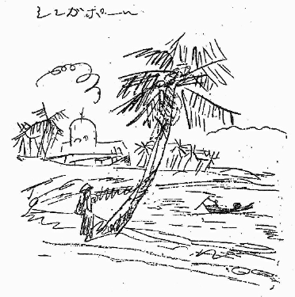
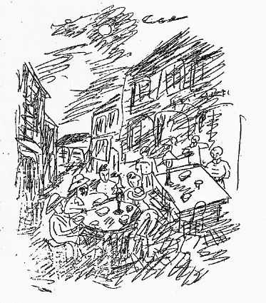
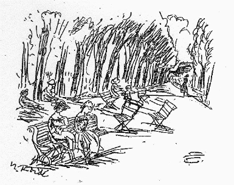
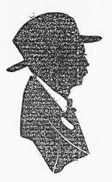

自画像
押入れから古い一束のはがきと手紙の包みが現われた。調べてみると昔、両親が私の美校入学の当時、東京から送ったところの私の手紙類をことごとく集めておいたものだった。
私はなにかおそろしいものの如くその一枚を読んでみた。するとその中には、「御送付下されし小包の包み紙は細かく切って鼻紙といたしました。それくらいの倹約をしています」とあり、あるいは「画架を買うのにやむを得ない道具のこと故思い切って買います。三円五〇銭です、高価です、しかし丈夫なものですから、生涯使うことは出来ます」。その他かかる文句をいろいろに並べて両親を安心させようと努めている。そうしておいて甘い親を欺す気かと人の悪い誰かはひやかすかも知れないが、決して私はさような者ではなかった。当時二十何歳の男としてはなんと善良にしてしみったれそのものであったことかと思う。
次にその心根と少しそりのあわない心根が私の芸術とともに、苦労しながら伸び上がってきた。すなわち私の第二の天性だ。
しかし第一の心根は私から出てしまったのではない。心の底に下積みとなって共存しているのだ。時に矛盾せるこの二つの心が別々に作用することがある。私も不愉快だが他人はそんな時、彼は狸だよ、喰えないということがある。この二つの相反せる心が作用すると狸の性格と見えるのかも知れない。
しかしながら万一それが狸であったとしても、狸の欺し方というものは大体さほどに深刻なものではないと思う。時に深夜の腹芸によって、不眠の夜の御機嫌を伺い奉る位のものではないかと私は考えている。あるいは逃げ出す時、小便をもって桜の花の満開位は見せたいのだが、とても私にはまださような神通力は備わっていない。
（「美術新論」昭和五年五月）
明月で眼を洗う
私の十歳位であった頃の記憶によると、私は母や女中たちとともに、それは盆の満月だったか、仲秋の明月だったかを忘れたが、まだ多少暑い頃だったが、その明月の夜に道頓堀川へ眼を洗いに毎年の行事として出かけたものであった。その頃の道頓堀川は今の如くジャズとネオン灯と貸ボートの混雑せる風景ではなかった。ようやく芝居の前のアーク灯という古めかしく青い電灯がうようよと夏の虫を集め、宗右衛門町の茶屋の二階に暗いランプが点っていたに過ぎなかった。
川水は暗くとろんと飴の如く流れて月を浮かべていた。その明月の水で眼を洗えばなるほど眼は清浄であり、眼病はたちまち平癒するように思われた。私は河岸へよせる水に足をつけて眼を洗ったこの美しい行事を今に忘れ得ない。それにしても、よく眼を悪くしなかったことだと思う。この川水こそは大都会の下水道であるのだ。
（「美術新論」昭和五年四月）
地中海の石ころ
去年の夏、南紀の海辺に寝そべった私は、久しぶりで広々とした大洋を眺めることが出来た。寝ていると、私の周囲にはかの石川
私はなぜかくも美しきものを人は指輪に、あるいはネクタイピンに、あるいは帯止めとして使わないのかと思った。しかしながらこう泥棒の種ほどもざらに落ちていると、なるほど拾って指輪にしても、それが浜の石ころとわかればあまり人が
だから私は正直正銘の値だんをそのままに現して見せる所の二十円金貨の帯止めや、純金
といって今、往来で拾ったばかりの石を貴金属屋へ持参して、その周囲をかくの如き様式の芸術で包んでくれと頼んで見た所で、職人は、あほらしい、そんなもったいないことはやめなさい、第一この石はただの石やおまへんか、というにきまっている。すると美しき空想も芸術も何もかもそれで終局となる。
南仏の沿岸は
忠実なる画家は、その後忘れずに南仏へ旅した時、村の人々にも
ファン相貌メモ
有頂天という、その頂天を離れたるファンの魂は頭上二、三尺の間を上下往来している。超有頂天である。
今や小倉対広島のクライマックスである。彼らの拍手は自身および近隣の魂まで叩き潰しはしないかと思われた。かと思うと天眼をもって闘士の行動をじっと見据える。
（「大阪朝日新聞」昭和五年八月）
真夏の言葉
夏服で神戸を散歩する頃、私はいつも渡欧の途中、
とにかくエンジンの動く甲板へ立ちさえすれば、われわれが幾枚かの絵を塗りつぶしている間に欧洲航路の船長は、甲板という地上の断片に乗って印度洋を何回か往復するのである。といって用もないのに船長の如く地球を走って見てもつまらないけれども、私は夏における汽船進行の形を見ると誘惑される事
私が印度洋を知らなかった時、私の心配は印度洋と
でも、私が日本を出る時、私のスートケースの一個は全く
それは私が暑さを厭うからでなく、汗を特別に嫌がるためだった。衣服と皮膚との間に一つの汗という汚水の層を持つ事は全く不愉快な事だ。浴衣の汗は直ちに
さて私の印度洋は湿気と雨と風とで日本の梅雨を思わせ、私はその風に当って軽い
しかし汗もいわゆる軽く汗ばむという言葉の如く汗ばむ事は、人間の心を妙にときめかす力がある。そして男女の肉体の香気を秋よりも冬よりもむしろ春よりも実際的な力を以て立ちのぼらせる傾向がある。
仲秋の月は鋭く
本当に私に適当な月は、八月の盆の頃の月である。物干しへ出て寝ころびながら、月面の穴に
とかく、秋の天候は変化に富み、折角の一年の月が曇らされてしまう
とはいえ私も考えて見るに、あまり寒からず曇らず、あまりに平凡に電燈の如く輝いているが故に、おやいい月だといってしまうと同時に、われわれはすぐ退屈を感じて月の事はもう天へ預けておいて、勝手な事をして遊んでしまう。
かの、四、五人に月落ちかかる何んとかいう言葉は、全く盆踊のために忘却されたる月が天に一つころがっている感じがよく現れていると私は思う。
完全に忘れられたる月を私は
甘酒とあめ湯は旧日本の
さてあめ湯とコーヒーと、どちらがうまいかを考えて見るに、どうもコーヒーの方がうまいとはいえない。だがあめ湯が飲みたいといえば女学生でさえ笑って、理由も何も聞いてはくれないであろう。
先ず横町のカフェーの珈琲というものは大体において何かの煎じ汁へ砂糖を入れただけのものの如く、でもそれを飲む事が人間の運命となりつつあるようである。田舎の宿屋へ到着した時、多少ハイカラな構えの家では先ず第一に珈琲糖をうやうやしく
私はやむをえず近頃は、日本のお茶という言葉を使って遠慮なく註文する事にしている。
私は暑中でも氷やアイスクリームを食べ、冷たいコーヒーを飲む事を好まない。私は汗を忍耐しながらも熱い珈琲を、熱い茶を飲む、かくして汗を以て汗を洗う。唐突に氷を以て、冷水のタオルを以て汗を引込める策略は、汗を変じて重油と化するおそれがある。
暑い日の海水浴は水の美しき誘惑には敵しがたいけれど、そのあとの皮膚の感触位
私は従って高山や高原への避暑を好まない。折角の夏の味を寒い処にいて
時に雨つづきの、もう一段と夏になり切れずにすむ夏があるものだが、私は何か天変的な恐怖をさえ感じる。
雑誌社の往復はがきはしばしば貴下の新案避暑法はといった事を註文してくる。
私は家族の者を海へ泳ぎに出しておき、一人画室のソファでのうのうと寝ころびながら、
芸術と金といえば大変仲の悪いものの如く聞こえるが、その愛するという心の動き方については殆んど同じ
しかしその老人は全くの無慾の状態において、専念紙幣に焼鏝をあてていたが、彼はそれによって世を忘れ、時を忘れ、今日は九十何度という事も忘却する事が出来、あらゆる他の慾望を持たなかった。ただ夕刻になると皺の延びたる一枚によって、も一つの三昧境の陶酔を買いに行くのであった。芸術家の至上主義が
とにかく、私は夏を愛する。そして冷たい秋風と残暑による重油の汗の季節になると、私の胃腸はよくない変化を起していけない。
太陽の贈物
人間の行事もこと面倒だが、自然が行う行事もなかなか手数のかかる準備をやっている。新秋の行事はすでに初夏においてそのことごとくが整頓準備されている。夏の初めのころだった。私の画室のテーブルに一匹の蟷螂の子供が現れた。その子供はまだ五分の長さを持っていなかったのに、蟷螂としての条件はことごとく備えているのだ。私は虫眼鏡を取り出して覗いてみた。すると彼は頸を傾けて私を睨んだりする。しかしまだ羽根は生えていないが、その勇ましき姿は蟷螂の少年団を思わせた。
私は彼を筆の穂さきへのせて、やがて来たるべき新秋のためにかどの叢の中へにがしてやった。ところが今それらが成人して朝顔の葉の上に、雑草の間に威張っている。
冬の最中に春の草が地中に頭を揃え、真夏の問屋は冬帽を整え、秋の展覧会への主要な作品は二月のころに私の画室で組み立てられる。
柿の実は青葉の懐に護られつつふくらんでいる。栗、メロン、いちじく、葡萄、その他新秋の百果は夏の青葉の陰に隠されつつ成人し熟して行く。それこそは次第に冬へ去って行く太陽が淋しき地上への贈物であるかも知れない。われわれはその中元御祝儀を遠慮なく頂戴して、そのお汁を充分に吸いましょう。
（「大阪毎日新聞」昭和五月［＃「五月」はママ］）
新秋雑想
立秋という日が過ぎて、どれだけ私のパレットの色数に変化を
だが、健康の人はこれに元気を回復し、やがて来るべき朝寒むへの用心のために脂肪を蓄積するであろう。しかし、われわれ骨人はその立秋の変化にあたりて下痢を催し、骨人は断然百パーセントの骨へ近づく。
春の草は
『
去年の初秋のころ、私の家には「銀」と呼ぶ白猫がいた。その眼は金色で、尾は狐の如く太く地に
銀はその後、勝手に一人、この
私はそれから、この葛の葉の蔭に白い紙片が落ちていても、銀かと思って立ち止まった事がしばしばであった。
フランスなどの四季の変化は甚だ緩慢で、よほど注意していないと秋にいつなってしまったのかわからない事さえある。いつとはなく次第々々に冬が深くなって行く。
ところが日本の四季の変化は急激で非常にはっきりしている。土用で
するとやがてラジオは
もう九月が近づくと天上の変化のみならず、地上のあらゆる場所から何物かが引去られて行く気配が見える。例えば
軒並みの浴衣の家族が並ぶ夕涼みがそろそろ引込んでしまう。
以前、私の家では、かかる季節には必ず床の間の軸物が取かえられた。初秋に出る掛物は常に
盆が来ると寺の住職が大礼服によって出張する。線香の煙と、すず虫と、近松と、お経と
床の掛物が、学校教育よりも私自身により多く作用した事は恐るべきものである。
床の間といえば、夏になると必ず出る滝の図があった。渡辺祥益といって
甚だ病弱だった私は裏に住む漢方医者に腹を
箕面の滝が消え去ると近松の秋暑しである。その次が誰の作か忘れたが紅葉の図だった。
私はどうも絵が習って見たくて
今、西洋人が日本画家の一本の筆先きから生れる竹石、雲煙の妙に驚くのと同じ種類の驚きで私は眺めていた。
さて家に帰ってやって見るに一向竹にもならず、
ともかく、季節によって変化する床の間風景は子供である私の心を刺した。全く日本の床の間は色彩と自然と芸術をなし崩しに放散して、日本人の生活に重い役目を
四条派の絵画も近代の展覧会場では全くうすぼけた存在に過ぎないけれども、一たび、うす暗い床の間に
かように絵画と生活とがぴったりと出合っていた事は、全く結構な状態だったと私は今になって考える。ところが現代では安い文化住宅のみならず、
子供の成長してからの追憶は、常にその汚ないライオンであるだろう。
あるいは時たま、義理で買いましたと嘆息しながら掛けてある一枚の油絵があったとしても、それが多分その主人の一代は変色しつつも懸ったままであろうかも知れない。そんな絵に限って、額は左右いずれかへ傾いて
季節によって床の間が変化する如く季節による年中行事があることは、その行事によって季節を
陽の下で笑う
男ばかりの集まった時の雑談は女に聞かせ難いことがあり、大人ばかりの雑談は子供に内密で有りがちである。話題はつい人生の裏道へ行きたがる。
私が子供であった時の記憶によっても、つい何心なく大人の部屋へ走り込んでみると、急に皆の者が慌てて話を中絶して白ばくれてしまったということはしばしばある。そしてことごとくの眼が私を睨んで、うるさいちんぴら、早く寝てしまえといったふうのことを語る。子供ながらも何のことだかわからないが、その眼の意味と、その場の空白の不愉快は直ちに了解が出来る。そしてその内密の世界の暗い圧迫さえも私は感じることが出来た。
しかしながらかように子供を避ける集団はまだ心につつしみを持つ行儀のよい方だが、もすこし下卑てくると、決して子供のために話題を転換することがない。彼らはその子供にさえもわかるように、親切に説明してくれたりさえもする。
私の通っていた小学校などは花柳界に近かった関係上、女生徒は殆ど小さい大人ぐらい艶めかしかった。そして彼女らは家庭教育によって水あげという意味さえ了解していた。
要するに子供の世界と、子供のためにという心がけを、一切大人は持っていてくれなかったものだ。子供すなわち大人でしたがって昔の子供は早くから暗い影を持っていた。子供と妻と亭主と打ち揃って往来を散歩することはもっとも恥ずべき所業であったことは、現代から見ると大よそ嘘の如き話である。
昔の日本の大人は早く童心を失ってしまい、子供も早く童心を卒業しようとした。早く内密の世界へ、大人らしく暗く世帯じみた世界へばかり志願していたように見える。
猫を私は愛するが、彼は食べて寝て起きて然る後私の手先の運動に対してふざけて遊ぶ。私はその間、猫とともに笑っていることが出来る。ところがある時期がくると手を動かしてやっても手毬を見せても鬱陶しい顔をして見向きもせず、常に屋根に志してうろうろと出て叫び、四、五日も姿を隠しやがてうす汚れのした不良少年と化けて帰ってくる。その時がすがすと食事をした後、ようやく元の童心の猫へ立ち帰る。
私はそのつきもののした期間の猫の暗く悪らしき態度を嫌に思うが、しかし止むを得ない彼らの運命でもあるのだから致し方もない。でも猫は五、六日で元の童心へ立ち帰るが、人間は一旦暗くなると一生涯の連続となるが故に、大人も子供も皆この暗い内密の世界に包まれては、まったく明るい太陽も邪魔な電灯にしか過ぎない。猫にも人間にも、どうせ夜の暗さは間違いもなくやってくる。別段奨励しなくてもエロ一〇〇パーセントであなた方を待っています。
しかし自然は都合よく人間の大人の暗さを太陽が落ちて再び昇るまでの間の星の世界へ押し込んでしまっている。そして子供は夜も昼も朗らかな太陽の連続である。
私はなるべくどうかして子供に大人の暗さを早く覚えさせたくはない。そして大人もせめて太陽の下では一切を忘却して永久に童心を了解して、初めて子供の世界をより完全により明るく、愉快にしてやることが出来ると同時に大人は永久に若く輝かしいだろう。
子供とともに笑うためには邪心の必要がなく、子供と妻とともに登る山では暗さの必要がない。子供とともに味わう野球、子供とともに組み立てて遊ぶデルタ、そして活動写真に暗き邪心の必要はない。
子供ぐらい動くものに興味を持つものはない。球の運動、機関車の進行、軍艦の煙、等々。そして現代では新鮮にしてもっとも動くところの芸術は活動写真である。ところがどうだろう、この明るく新鮮な、動く芸術の世界は学生と子供からまったく閉鎖されているのだ。そして子供には内密で大人ばかりで雑談に耽り、猥談に遊んでいる。
私はキートン、チャップリン、ロイドあるいはコンクリンの喜劇あるいは実写ものニュースの類、山岳、飛行機については子供とともに朗らかに笑いあるいは説明し、ともに感心してみたりも出来る。だがあのスクリーン一杯のクローズアップの人相の悪い不愉快な男が髪を乱して刀を抜いて大殺人をやるところはいかにも自分の子供とともに悦んで見ているわけにはいかない。これこそ、心ある者は子供の世界から閉鎖するのが当然である。それにしてもチャップリンが持てる童心やキートンの童心に私はいつも感服している。
まったくせめて一つや二つの子供に対する完全な常設館と、映画があってもいいと思う。光と、運動と、科学を極端に生かすことの出来る新鮮な芸術を、子供から遠ざけていることはまったく残念で不幸なことだ。私は何にしても子供と、家族とともに太陽の下で朗らかに笑いたい。
（「大阪朝日新聞」昭和五年八月）
国産玩具の自動車
玩具屋のショーウィンドに、かなり立派に見えるところの玩具の自動車が並べてあった。私の子供は、それを以前から買ってくれ買ってくれといっていたので、とうとう買ってやった。子供は大喜びで家へ帰ると、すぐさま箱からとり出してぜんまいをねじろうとすると、その肝心のぜんまいが駄目になっているのであった。早速よいのと取りかえにやったところが、今度はおよそ半日ばかりたつと車の心棒がぬけてしまった。そのぬけた個所をよく見るに、なるほどぬけるのが本当であると思える位ぞんざいな細工がしてあるのだった。ところで半日も経過しておまけに二度までも取りかえに行くことは随分おかしな話で、玩具屋も承知しまいと思ったからついそのままにしてしまった。子供の悦びは半日で消滅したわけだ。
こんなことは日本製の玩具には常にあることだから珍しくはないが、まったく子供のためにも可憐そうでならない。せっかく楽しんで持って帰って、さて遊ぼうとするとすぐさま用をなさなくなるのである。
ところで、この自動車はちょっと見たところは、さも西洋出来のもののように見せかけてあった。
近頃は玩具に限らず、何によらず舶来品の如く見せかけてあるというものが、めっきりと多くなったようだ。ついこの間までドイツ製で見かけたと思うそれと殆ど同じ形のものが、日本製となって現れていることがしばしばあるのだ。じっと見るとどこか間が抜けていて、すっきりとはしていないのである。買って帰るとぜんまいがきかなかったり、車がとれたり、走らなかったり、種々様々の故障が現れてくるのである。
私たちは何も好んで舶来品を欲しいとは思わないのであるけれども、舶来品には、この自動車に現われた如き情けない悲劇は起こらないからうれしいのである。どんなに安ものの玩具一つでさえも、そこに非常な親切と科学的な考えとが結びついているのである。
それとも一つ西洋出来の玩具のいいところは非常に写実的であることである。子供の頭は自分の好きであるところのものに関しては、大人などよりも随分写実的である。例えば東海道線を走る大型の機関車の形はどうであるとか、その機械の部分についても驚くべき知識をもっている。その他電車の形、その車輌の状態、あるいは飛行機についても同様である。
大人の多くはそんなものに興味を持たないために、うっかりとしている。日本の大人で機関車の形がちょっとでも描ける人があるかどうか。日本の玩具屋のおやじなどもその一人だ。
西洋の玩具はこの子供の要求をまったくうまく容れているのである。ちょっとした汽車の形において日本の玩具製造者が到底発見出来ないところの形の写実が、うまく簡単に行われているのである。それで子供がそれを欲しがるのも無理はないのである。
私たちが子供をつれて三越の玩具部とか、その他の玩具屋の前へ立った時に、どっさりと並べてあるところの日本製のブリキや、木造の汽車を見る。その車輪は申し合わせた如く、荷車か何かの如く、車体よりもはるかに外方へ出張っているのだ。そしてその形といえば到底、汽車のかすかな感じさえも出ていないので、少し頭の進んだ現代の子供は、決してそれを欲しいといわないのである。そしてガラスの戸棚の中に陳列されているところの舶来品の、さも汽車らしい汽車を、夢に見るほどの熱をもって欲しがるのである。子供は正直である。和製は安くもあるし、日本の貧乏のため国産奨励のため一つ不便と不愉快を忍んで、この嫌な木製の荷車のような汽車で辛抱しようとは、決して思ってくれないのだ。私は大人でもこの木製の方は嫌だと思う。
しかしながら近頃は日本品が舶来品に負けないということを知らしめるための展覧会が、時々大いに催される。
そんなことからでもあるのか、近頃は玩具に限らず雑貨にしろ、洋菓子にしろ何によらずその体裁と外形だけはさも舶来品らしく模造し出したので、ちょっと見たところはさもよいものであるらしく見えたりするのである。
なるほど展覧会というものは見たり眺めたりするだけのものだから、その見かけだけは劣らないようにと心がけが発達して来たものかも知れない。ついでに手に取って使ってみても劣らないものが出来ればいいのだが、そんな時代は次には来るものとしても、ともかく今の時代の子供はまだまだ不幸である。
ついでに日本で一般にケーキと呼ばれて広まっているところの菓子のまずさと、西洋菓子屋の店頭に並べてあるところのリボンのかかった美しい箱入の洋菓子の味なさかげんを嘆じてこの稿を終わる。
（「美之国」昭和二年一月）
尖端の埃
古色を帯びたる活動写真、飛行機、自動車のエンジン、パラソルなどはあまり好ましくない。完全にいえばパラソルは一年限りのものであり、自動車は今年の型、活動写真のもつ最高の感激性は最初の封切りにおいてのみ存在する。どんなに面白い映画でも三回以上同じものを見る気はしない。やくざなものはただ一回で焼き捨てるべきだとさえ思わせる。
その点では、歌舞伎とか
要するに、科学的な近代芸術は映画、自動車の美しさと同じく、いくらでも作って早く見て早く捨てる処に、
だから、この尖端的な世界にあっては、恋愛でも油絵でもが、少量の雅味と滋味を断然排斥して清潔に光沢をつけ、観衆を集め、
ともかく、活動写真のレンズに
あるアメリカ人が古道具屋で観音様を買って持ち帰ると直ぐ
だが日本は、古くより雅味、茶気、俳味、古雅、仙骨、埃を礼讃した国民であり、折角作り出した塑像を縁の下の土に埋め、
自家用の自動車を老人が鼻の脂で十年間磨いたら、さぞ雅致あるハドソンが現れるだろうと思われる。自動車こそは女性のパラソルの流行とその形の変化と同じく一年で変形する。古きを捨てて新らしきを知るものである。だが、その日進月歩文明開化の尖端風景の世の中を、十幾年以前の優秀車が主人の鼻の脂で輝きつついとも珍型となって大都会を走る事は、また新鋭的な雅味をもたらすであろうと思う。
だがまだまだ、新鋭的尖端が
しかし、
この間、オールスチールの尖端的スピードを有する大阪の近郊電車へ乗って見た。光沢あるエナメル塗りの内部は相当の近代であった。するとどやどやと
私の近くにモボが淋しく窓外を眺めていた。これはこの近代電車に調和していた。すると両袖の長い女給が走って来た。えらい待たしたやろ、すまなんだといってその隣へ腰をおろした。
私はその両親の肖像に同情して見た。何しろ写真の事だから「これ息子、
緑蔭随筆
一本の草、一枚の葉の弱々しいあの
もしも、人間の手工品ででもあったなら、百貨店やカフェーの紙の桜であるならば、全く一日も嵐の中には立っていられまい。
緑の黒髪という。その人間の毛髪も頭を蔽うところの草木とも思える。私は毛髪の美しさと同時にその不思議な丈夫さに驚いている。
草木の葉は刈取るとすぐ
人間の毛髪を刈取ったものを私は寺の本堂や小さな
真夏の昼、
さて、近代的交通機関とその宣伝の行届く限りの近郊風景は
妖気も緑葉も、珍鳥も、神様も、人間の目算にかかっては
さて、私もまた、自然を荒すであろうところのデイゼルエンジンの小刻みの近代的な震動と、その事務長であったところの絵の好きなＩ氏の誘惑に乗って去年の夏、南紀の海と山を味わって見た。
汽車も電車もない上に
しかしながら更に南進して黒潮を乗切ると、もう人間の力は幽霊と妖気に降服してしまっていた。大洋と
私が瀞八丁を尋ねた時は梅雨中のある猛烈な風雨の日だった。一丈あまりの出水でプロペラー船が出ないかも知れないとさえいわれた。従って瀞らしい風景は見られなかったが、とても濃緑の世界と陰鬱と
中学時代に、私はこの
しかしながら、この不精者をここまで引ずって来て自然の妖気に触れしめたことは即ちデイゼルでありプロペラーでもある訳だ。その代り妖気も神様ももうそろそろ引越しの用意に御多忙のことであろうと思う。
舞台の顔見物
高座へ上がる落語家、講談師、新内語りの名人達の顔を見るに、多くは老年であり何か油で煮つめたような、あるいは揉み潰したような、奇怪にして異様な有様を呈しているものが多いようである。しかし決してその奇怪さや異様さが、悪人とかうす気味悪いものであるとは思えない。奇怪ながらも渋味ゆたかに掬す［＃「掬す」は底本では「掬う」］べきものがあり、その芸とともに渾然として心の隅から好感が湧き上がってくる。
あまり若い好男子を高座に見ると、かえって例えば若い男のある何物かを発見した如き、なまいやらしさを感じさせられ、彼が何を上手に喋ったところで皆不愉快の種となってしまうこともある。
何事によらず一代の名人巨匠となると女子供にはちょっと了解致し難い人間のぬしとなり切ってしまい、狐でいえば金毛九尾となって、狐の中の超正一位のぬしとなる。
上野の森を大観という画人が大ぜいの部下に護られて歩いていると、それは絵描きのぬしとも見えたりすることがある。
名優の素顔も、手にとってじっと眺めてみたら、きっとがっかりする位の奇怪さを備えたものだろうと思う。ありあまりたる鼻の高さや頤の長さ等、写真のクローズアップの如く顔全体異状だらけだと思う。その位の大げさな異状を舞台へかけて遠望すれば、ちょうどはっきりとまとまったところの強き美しさにまで縮むものである。そしてその不思議な構成の強さによって心の動きもはっきりと放散出来る次第だ。
だから座敷で見ての好男子を舞台へ立たせたら縮まってしまって、何もかも見えないところのいじけたる存在となってしまうだろう。
文楽座の人形の顔を座敷で手にとって見ると、案外小さいものである。野球のボールの二、三倍位のものだろう。ところがその顔の造作が素晴らしく大げさにいかめしく出来上がっているところへ、はなはだ大まかなその使い方によって、あの人形が広い舞台一杯にのさばり出して大きな印象をわれわれに与える。
ちょうど油絵の仕組みと同じく、常に遠く眺めてよき効果あることを考えつつ作って行くのに似ている。近くで見てちょうどよろしき仕上げでは壁面へ収まって［＃「収まって」は底本では「収まってしまう」］から、色も調子も飛んでしまって存在が弱い。
元来日本の油絵は奥行きと調子がなく、味わいはあるがうすっぺらで展覧会場で引き立たず、色ざめてしまい小細工となっていじけがちであることは、日本人が常に畳の上で色紙を描き炬燵によって美人の顔ばかりを鑑賞していた遺風によるものであるかも知れない。総じて西洋ふうの芸術は舞台的だといっていいと思う。
相当の役者にして、どうもも一つ素晴らしく大成しないものがある。私はそれらの顔に、すなわち持って生まれた素顔の構成上、致命的な鼻の低さ小ささ等を発見して、気の毒に思うことがある。しかし左様な顔に限ってお座敷向きだろうと想像する。
名人名優でなくとも昔は好男子が直ちに役者の第一条件とされ、好男子でさえあれば下手糞でも人気は大変なものだったが、今もなお左様なこともあるにはあるが、しかしだんだん近代になって人間の人相性格のはっきりしたものが役者となってもっとも有効となりつつあるように思う。ことに映画においてはバンクロフト、ストロハイム、ヤニングスとかボウエルとか草人とかあるいは端役の老若にも性格そのものの顔を集めることは注意している如くである。また愛好家の女性達もまただんだん治兵衛好みからバンクロフトへ好意を転じつつある。ともかくももう卵に目鼻という顔は
人形芝居では、人相というものを初めからその役々の性状にしたがって適当に作ってあるから由良之助が軽卒な顔であったりすることはないが、人間の役者ではその人相と性格が役の邪魔をすることがかなりある。この間も私は久しぶりで忠臣蔵を見た。大阪のことだから役者不足の東西混合劇だった。したがって何かの余興に見る名題芝居を思わせるものがあった。
幸四郎という人の顔は、はなはだ明快で大柄でのんびりとした相貌で、性格は英雄ふうと見えるがためか、太刀を揮って鬼の片腕のために奮闘などしていると安心して見ていられるが、師直となっていたものだから、豪快善良な師直が出来た。とても判官位を相手にケチな金儲けなどする人物とも見えず、その上相手の判官は大阪の福助というもの静かなむしろ静物に近い性格者であった。好漢師直でありしかも判官は腹立てず、しかしながら筋書きもあることだから、ともかく刀は抜かずにはいなかった。
さて電光輝く桜の仲之町、多少のジャズとレヴューの光景だ。ここでは幸四郎の人相は大いに役に立った。紫の鉢巻したる助六だ。そこで弱ったのが揚巻太夫の静物福助だから一人ではしゃぐ助六を尻目にかけて、この不良青年を目殺してしまった。といったふうの役者の人相と役とのちぐはぐは不思議に変な気のするものである。
まずわれわれ画家は作品とともに並んで本人出演の必要がないので、幸いにもどんな素顔や人相を呈していたって構わないわけではなはだ自由だ。しかし中には隠しておくにはもったいない位の好男子もあることだから、これらを絵画愛好の若き女性達へ広くお目にかけ得ないことは残念な職業である。まず個展でも開いた節モーニングか何かで会場へ立って、自分の画集へサインでもさせていただく位ではまだ淋し過ぎはしないか。
（「文芸春秋」昭和五年四月）
電球
強盗、ゆすり等はあまりに直接な行動だから芸術的余情を伴わないけれども、いろいろと工夫を凝らして玄関から欺しに来る奴の心は憎めない愛情があり、よくあんな智恵を絞ったものだと感心されることもしばしばある。そのつまらないことを考え出したその心根に同情して欺されながらもつい微笑が湧く。
いつの頃だったか忘れたが、雨の降る夕暗まぐれに、電球の中の線の切れたものを修繕してあげますという洋服の男がやって来た。それはなるほど便利重宝なことだと思った。幸い切れた球は二個あった。一個一〇銭ですぐ修繕するという。これは欺される方もよほど常識が欠乏してはいるのだが、結局頼んでしまった。
その男は受け取った二個の電球をポケットへ入れて出て行って三〇分ばかりで帰って来た。もう出来ましたという。その時日は［＃「その時日は」は底本では「その時は」］暮れていた。彼は輝ける電球を消し球をはずして、今修繕して来たものと取換えた。なるほど不思議に輝いた。今一個のものも他の電球へ取りつけた。それも直ちに点火した。そこで二〇銭を彼に与えると、彼は礼を述べて立ち去った。
それから三〇分もたたぬうちに修繕してもらった球は二つとも殆ど前後して消えてしまった。何のことだ、どうせこんなことだろうと思って以前の電球を元の如く取り付けてみるとその球の線も二つながら切れていて光らないのだ。すなわちそこには四個の切れた古球がずらり並んでしまった。
ようやくなるほど欺されたということがうすぼんやりと判って来た。
結局、彼は二〇銭と私の家の新しい電球二個［＃「電球二個」は底本では「電球」］をポケットへねじ込んで、切れた球をその代わり暗がりまぎれに並べて帰ってくれたわけだった。それでとうとうまた二個の電球を買いに走らねばならなかった。
しかし考えてみると、当方の間抜けさと彼の手品の成功は、寄席の手品で［＃「手品で」は底本では「手品でも」］ちょっと舞台へ呼び上げられて縄の尖端を持たされている位の余情はあった。
勇しき構成美
近代芸術の
だが、自然が作ったという山川草木、昆虫、人体でさえも、それを解体し、分解し、顕微鏡で
微細にして精巧な部分品が結合して路傍の雑草を形造り、山川草木を形造り、人間と昆虫とライオンと猿と虎を造る。そして虎の雄姿と、草の花の愛情をも現す。
機械こそは近代の人間がその頭脳の働きを
絵を描かぬ美術家、趣味から生れた建築やいくさぶね、切れない日本刀、不感症の女等は邪魔にばかりなる存在である。そして画家は、自然の草木、人体、機械、何が何んであろうとも、美しき存在は悉く描いて見たいという本能を持っている。現代の絵画のあるものは機械をモチーフとするに至ったことは甚だ当然であり、なおもっと機械が芸術の様式を左右することになるであろう。
街頭漫筆
私はあらゆる交通機関が持つ形の上の美しさを常に愛している。近代の機関車の複雑とその滑かな動きに私はいつも
さてわれわれの街頭風景を飾るべき主役は、即ちこれらの交通機関であり、なかんずく自動車とバスであろう。自動車は幸いにも世界共通の形のものがそのまま走っているので美しいが車体だけを安く仕上げたところのバスの形はいと情ない姿である。長さの甚だ足りない、不安定な、尻切れとんぼの、貧乏臭い箱が走って行くところは、『
文明都市の交通の惨禍という文字を私は度々読まされている。また日々の散歩で自動車がセンターポールへ
さような事件が、あまりしばしばあり過ぎたりすると、この自分の頭も
さてこれらの怖るべき惨禍が至る処に毎日起るほど、東京や大阪の市街は文明なのかと思って見るに、私はそうだとは思わない。
それは未開地であるが故に起るところの惨事ばかりだといっていい。訓練不足の民衆と、乱雑不整頓、無茶苦茶の都会交響楽であり、
だから、日本の交通巡査位骨の折れるものも少いだろう。彼らは手を打ちふりつつも群衆を教育しつつある。その白い手袋の運動を剣劇の興味を以て、
私は時々、この多くの自動車やその他の動くものの中で、何に
あるいはバスか、トラックか、もうろうタクシーの方が死ぬにはむしろ気楽でいいかも知れない。なまじっかな見舞金や
先ず
交通巡査の動的美
私はこのごろ交通巡査というものに興味を感じている。
それは鉄筋コンクリートの建築の、アスファルトの舗装道路の、電車の、自動車の、その他のあらゆる交通機関の、近代都市にとって欠くことのできない点景のひとつとなった。
それは制帽をかむり、制服をつけ、そしてサァベルをさげた一人の巡査というよりも、そのゼスチュアのあざやかさと、正確さと、メカニックな点においてむしろ一個の機械としての興味を私に感じさせる。
それはある意味からすれば機械よりも機械らしく、機械よりも完全に動く機械である。
私は郊外電車の停留場前や、市電の交叉点に立って、交通整理をしている交通巡査のすがたをその両腕の動きを、じっと眺めていることがあるが、絵画的――というよりも、そのなかから見出すのはむしろ活動写真的な面白さである。
漫画には描くことができるかも知れない。もしくは近代都市風景のなかの一点景人物として取り扱うことはできるかも知れない。だがそれの持つ本当の面白さを表現するには、どうしても絵画より活動写真だ。私はその適当な例を、先日見たドイツ映画『アスファルト』のなかにあげることができる。
往来のまんなかに立っている交通巡査が、その両腕を動かすごとに流れるような車馬のゆききがとどまり、動く有様は勇ましさとともに美しさを感じさせる。
しかもそれはメカニックなリズムを持つ動くものの美しさだ。
私はそれを見て以来、日本の交通巡査がもう少し美しければと考えた。
それは顔の美しさ醜さというよりは、肢体と服装との統一された美しさをその言葉のうちに含んでいるのであるが、日本の交通巡査の肢体がもっと大柄で、帽子も服も靴も一色の黒でなく、それの背景となる近代都市の風景にぴったり調和するように、もっと色彩の美しい、目につきやすい、すっぱりしたものであって欲しいと思うのである。
陽気すぎる大阪
私がもしも現在なお大阪の財産家のぼんちであり、その遺産と先祖代々の商売を継承していたとしたら、そしてその余りの時間を南地北陽に
ところが学術、文芸、芸術とかいう
貧乏して何にもならぬ事に苦労している時、こういわれては全く
居住性からいえば、大阪の郊外、殊に阪神間くらいいいところはないと思う。だが、この温和な土地で、大きな別荘に立て
阪神［＃「阪神」は底本では「阪神の」］夜店歩き
神戸
心斎橋を行くと呉服屋と下駄屋と時計屋と小間物屋との重複連続だという印象が残る。そこでわれわれ男たちにとっては、その両側の飾窓ははなはだ無興味である。その点では神戸の方が男たちをよろこばすべき商家が多い。洋食器屋、ハム、ソーセージのうまい家、ユハイム［＃「ユハイム」は底本では「ユーハイム」］やフロインドリーブの菓子屋、洋家具屋、支那街の焼豚屋、カラー、ネクタイ屋、西洋雑貨屋、バー、チャブ屋など限りがない。なお私の蘆屋からは大阪よりも手近である関係上、つい神戸を多く訪問する。そして例えば私の好きな古道具などを素見しながら山手の三角帳場から両側の店を覗きつつ生田前へ出ることに近頃ではおおよそコースがきまってしまった。
それが夜ででもあれば明るい店頭は生田神社の前からなお連綿として踏切を越え大丸の前から三宮神社の境内に及ぶ。そしてこの境内は毎夜の夜店である。金魚を掬う屋台店から、二銭のカツレツ、関東煮、活動、征露丸［＃「征露丸」は底本では「正露丸」］、コーヒー、ケーキの立ち飲み屋、人絹の支那どんす、五〇銭、二〇銭のネクタイ屋等の中を女給、ダンサー、アメリカ水兵、フランス人、インド人、西洋人の夫婦が腕を組める、支那の女が氷水を飲んでいる等は船場、島の内［＃「島の内」は底本では「島野内」］の夜店では発見出来ない情景である。
それからじきに元町は明るい商家が軒を並べている。その元町を行き過ぎてしまうと三越のところから楠公前は目前に迫っているという有様だ。さてこの辺から少々街の品格が下がってくる上に往来の人物も何か尻をまくり上げた男連れが多くなる。楠公神社は今は三の宮の賑わいに及ばないけれども、その淋しい境内に暗い夜店がポツンポツンと散在せる光景もまた何か夜店の憂愁を感ぜしめる。
それからなお両側の明るい商家はいよいよ明るさを加え、混雑を増し、何となく遊廓の香気さえ高くなって行くのだが、それから湊川の新開地の昼店［＃「昼店」は底本では「画店」］と夜店と光と雑沓が控えている。とにかく三角帳場から新開地までのコースにおいて、われわれは暗がりの町を発見することがない。そしてその東西の長さにおいてはまったくくたびれるだけの距離がある。要するに神戸の商家はことごとく夜店の代用も勤めているといっていいかも知れない。それでむしろ神戸の夜店は場末に近いところに多く暗い街を明るく照らしている。電車やバスの窓から、神戸を離れたと思われるころ思いがけないところに電灯の輝く長い一筋を発見することである。夜店の賑わううしろの暗に青い麦畑を見ることもまた場末の情景である。近ごろは芦屋でさえも夜店は相当の賑わいを呈して来た。子供はその三と八の日を忘れない。
大阪
さて大阪は昔から商業の中心地であり、大体において中心地帯は大問屋が軒を並べているためか夜になると各戸ともに戸を締め切って街路はまったく暗やみとなって静まり返ってしまう傾向がある。晩に店を開くものは小商人としてむしろ軽蔑されがちだった。まず大阪の町は暗いのが特長だといっていいかも知れない。ずっと以前は梅田から堺筋を経て恵比須町にいたる間において、ただ日本橋のあたりが夜の灯に輝いたに過ぎなかった。そして日本橋三丁目あたりのある暗い夜店では私は幾度か兄さん兄さんと見知らぬ女に捉えられたくらいの淋しさだった。驚いてよく見ると、五人のうす汚れした女が立っていた。
現代［＃「現代」は底本では「現在」］では街の明るさは街灯によって増したけれども、でも堺筋の大部分の家は昔と同じく夜は戸を締めた暗い街路に過ぎない。第一流の散歩道といわれる心斎橋でさえも、この現代において、北は久太郎町から難波駅にいたるただ十町ばかりが心ブラ地帯であるに過ぎない。若き暇な芸術家は一夜に心斎橋を幾往復するか知れないという。さても辛抱の強さよ。
したがって大阪の夜店は暗黒の街路を一、六、三、八、といった日に氏神を中心としてその付近を急激に明るくして楽しもうとする傾向がある。私の子供時代の大阪の夜の暗さは徳川時代の暗さをそのままに備えていた。だから夜は寝るよりほかに途はなかったものだ。したがってまだ宵の一〇時ごろに火事の半鐘がじゃんと鳴ってさえも、丁稚や番頭は悦びに昂奮して飛び上がったものだ。縁もなきよその火事でさえも一応は火事半纒を着用して、えらいこっちゃ、近い近いと走り出した。そして彼らは火事が終わりを告げ、火の気がなくなるまでかえっては来なかった。それくらい若い男たちは退屈だったのだ。丁稚や私の幸福は、すなわち火事と夜店の八の日だった。それは八日、一八日、二八日に出るところの大宝寺町の夜店だった。母はその日がくると今夜はよのよだといった。すなわち横町の夜店の略称だ。すなわちよのよの日は女中も番頭も丁稚もめかしこんでぞろりぞろりと繰り出すのだ。暗い町が急に明るくなり、淋しい町が急激に賑わうことは何といってもわれわれを昂奮させた。まったく夜店は夏は夏で西瓜と飴湯に暑さを忘れ、冬は冷たい風を衿まきで防ぎつつカンテラの油煙を慕って人々は流れて行く。ことに年末の松竹梅と三宝荒神様のための玉の灯明台、しめ縄餅箱を買うことは、われわれの心へいとなつかしき正月の情趣を準備させることだった。春になって風の温かい日がくると夜店の灯火は誘惑をことのほか発揚する。そして何といっても夜店の誘惑は夏である。
人間が不思議な温気と体臭を扇子や団扇で撒き散らしながら、風鈴屋、氷屋、金魚屋、西瓜屋の前を流れて行くのである。その大宝寺町の夜店は今なお盛んに行われている。私はなつかしみつつ今も時に歩いてみることがある。それから四、五年間私が住んでいた八幡筋へも八幡社を中心とする夜店が出た。自分の家の前が雑踏することは子供でもない私を何か妙にそそるところがあった。私は夜店の人の流れがおおよそ引去った一二時ごろひっそりと夜店の末路を歩いてみるのが好きだった。そして古屋敷の徳川期の絵草紙類や娘節用、女大学の
 絵に見惚れて仏壇の引出しを掃除しているごとき気になって時を忘れたものである。
絵に見惚れて仏壇の引出しを掃除しているごとき気になって時を忘れたものである。さて、近代の堺筋はどれだけ明るさを増したかを見るに、もちろん街路に電灯は輝いたけれども、多くの家はなお夜は戸を締めている。その暗いトンネルをタクシーのヘッドライトが猛烈に流れている。クラクソン［＃「クラクソン」は底本では「クラクション」］は叫ぶ。自分の話す声さえ聞こえない電車の車輪の鉄の響である。タクシーの助手は乾燥したいびつな顔を歪めつつわれわれの前を通る時、一本の指を一休禅師の如く私に示しつつ睨んで行く。その一本の指にこそ現代［＃「現代」は底本では「現在」］の複雑な心が潜んでいることを私は感じる。
タクシーの示す指の相貌と同じ相貌を私は近ごろ試みられつつある堺筋の新しき夜店を訪ねて発見した。夜店は指を示してはいなかったが、堺筋の夜店では旧夜店の相貌を見ることは出来なかった。平均された貧しく白い屋台の連続と手薄い品物と何か余情［＃「余情」は底本では「予情」］のない乾燥とが、かの桃色の小型タクシーを思い起こさせた。そして堺筋の歩道の狭さは殆ど二メートルと見えた。その中を往と復との群衆が衝突しているのだった。あまりの苦しさから車道へはみ出した時、たちまち交通巡査は人道へ帰れと叫んだ。この窮屈な人道を行く五分間のうちにおいて女は二回まえを擽ぐられたという。次の五分間において二人の女性がある店頭に立った時洋服の中老紳士がその真中に現れ、気を付けの姿勢を保ちながら左右の女性を同時に驚かせた。しかるのち気をつけの姿勢のまま悠々と立ち去ったということだ。
だがしかしこれを警察官も一つ一つ検束せず、女も本心から怒らないところに夜店のなごやかな雰囲気を見ることが出来るかも知れない。そして夜店の不良少年はそれらの汚名をことごとく引き受けている。だがしかし若い女性は中老の紳士をもっともおそれているそうだ。
堺筋では例の画家達のやっているというミス・サカイスジの相貌が見たいので私は苦しい流れを行進した。そしてミスの横文字を発見した。ある父はマリオネットの人形を指して、「それお化けや、買うたろか」といったら子供は「いや！ こわい」といって悲鳴をあげた。あるいは若い亭主が妻に向かって「これが芸術というもんや、どや」といったりした。それらの言葉を聞いているだけでも相当の興味が持てたが、何しろ五分間と停滞することを許されないので私達はそのまま揉まれつつ押し流されてしまった。
偶然にも平野町へ来ると六の日とみえて、ここも夜店で賑わっていた。平野町は御霊神社をめぐる古来有名な夜店である。新旧二つの夜店が十文字に交叉するということははなはだ面白い現象だった。私はほっとしてこの古い顔の夜店へ吸いよせられてしまった。
ここは道もゆるやかだし、電車も巡査もいない。危険と苦痛がないことは何よりだった。そして第一に屋台の様子がその店の個性を出して思い思いの意匠を凝らしているところは歩行者によき慰めを与えるのである。そして香具師と和本屋と古道具屋と狐まんじゅう、どびん焼、くらま煮屋が昔そのままの顔で並んでいた。私が十幾年以前に初めてガラス絵を買ったのもこの平野町だった。末期的な役者の似顔絵と、人形を抱く娘の像の二つを発見して妙に執着を持った。私は多分一枚五〇銭で買ったと記憶する。それが病みつきでとうとうガラス絵とは妙な仲となってしまった。
私は香具師がする演説に感心してしばらく立ち止まって聴く。大根の皮をむく機械など使う手練の鮮やかさは、ついその役にも立たぬものを買ってみたくさせるだけの才能がある。あるいは猿股の紐通し機械を売る婆さんは猿股へ紐を通しては引き出し、また通しては引き出している。私は時に猿股の紐がぬけた時、あれを買っとけばよかったと思うことがある。さてその前へ立った時、どうも買う勇気は出ない。あるいは暗い片隅でさくらが役にとられた顔つきで珍しくもない万年ペンを感嘆して眺めている。その姿を見ると私はそこに夜店そのものの憐れにも親しむべき心を発見する。その他、悪資本家退治の熱弁のお隣で木星の観測だといって遠眼鏡を覗いている。それらの浮世雑景の中をまたその点景の一つとなってうろついていることが私自身の浮世でもある。
（「大阪朝日新聞」昭和五年七月）
立秋奈良風景
奈良、
私が美校にいた時分など、夏、冬、春の休みには必ず関西へ帰った。その誘因は大和の春、奈良の秋の思出に他ならなかったという位のものだ。全く、関東の
殊に
だが土用を過ぎると急に天地の色から一つ何物かが引去られ、
だが秋の風は時に冷たく油汗を
奈良で画家が集る写生地は主としてこの高畑である。私は時に高畑の東にある
新薬師寺の物さびたる境内は私の最も好きな場所であった。ひぐらしと蝉の鳴物はかえってあらゆる音を征服して非常な静かさを現す。その中に古い本堂が甚だ簡略に建っている。その本尊の顔は
この本尊である
そしてここの絵馬にはめの字の記されたものが多く、
そして他に
私は絵もかかずにぶらぶらとこの本尊を眺め、めの字に村人のトラホームを考えながらつくつくぼうしの声を聞き、冷たい本堂の冷気を吸いにしばしばここまで足を運んだものだった。そして、その附近の
裏町のソーセージ
１
朝起きるとすぐ柱か何かで頭をうつとか、日曜の朝のピクニックに汽車に乗りおくれるとかすると、その日一日は乗物の都合が悪かったり、足を踏まれたりろくなことは起こらない。
私の誕生日というものが、またはなはだ不愉快なものだった。もしこれが一九三〇年の現代の出来だったら、当然省略され得る誕生日だったのだ。何しろ私の知らない私の父がひそかに女中か何かを刺激したことから起こった分裂作業だったのである。起きたくもないのに蹴り起こされて目を醒ますと邪魔だから寝ておれと叱られるが如く、やっとのことで誕生してみると皆がもてあまして憂鬱な顔をしているのだ。嫌な家庭だった。私はこんな不愉快な日が自分を待っているとは思わなかった。といって一生に二度の誕生日を持つことは出来ないのだから、むしろ自ら爆発してやろうかと思ったかも知れないが、一旦この世へ［＃「一旦この世へ」は底本では「この世へ」］出た以上はもはや魂だけのものではない。人間は五体を持った以上、人魂の如き自由自在は許されない。
まあ、止むを得ず私は裏通りから成長したわけだが、それはどこでどう成長したのか記憶がない。この世の光景が少々意識された時にはＢ夫婦の家庭で、丁稚のような仕事をさされていた。
２
そんなわけから、両親を知らない私の神経からは子供らしさとか、明るさとか、甘えるとかいうことは一切引き抜かれていた。ことに甘えて帽子を買ってもらう、甘えて洋服を、甘えて玩具を、鉛筆を、ナイフをということはまったく出来なかった。そこで私は甘えずに買うより外に途はなかった。小間物屋であったその店には銭箱があった。売上げの二〇銭はその一〇銭だけを銭箱へチャラチャラと音高く投げ込んで「有難う御座います」とか「ようおいでやす」とかいっておいて残る一〇銭を懐中へ落とし込めば、相当の収益は得られたわけだった。ある時、ニッケルの光輝あるナイフとその他いろいろの玩具類が畳の上に並べられ、主人Ｂの前でうつむいている私をみたことがあった。私の裏町の幸福がずらりと表へ並べられたのだ。
いつまでも父母に甘えることの出来る子供は、相当の年になってもなかなか熟さないものだが、甘えることの出来ない子供は何といっても感情的には独立しているから、強くかつ早熟だ。そして母に甘える代わりに広く一般の女性に甘えようとした。あえてしたわけではないが自然左様な傾向になって来たのだ。
もっとも私が接近し得る女性といえば庭に働く女中達だった。女中の入れ替わりというものは私を妙に嬉しく興奮させた。女中のＣというのが瀬戸内海の小島から来た。美しかった。ところがこの女が私の食膳をひそかに豊富にすることに努力してくれた。お菜の分量が急にめきめきと常の二倍に達した。私は感謝せずにはいられなかった。そして私ははじめておかずの注文を企ててＣへ甘えてみるのであった。
３
店の間には丁稚のＱと、女中のＣと、そして私とが寝ることになっていた。丁稚のＱは横になるとむしろ仮死の状態にあったから、店の小間物の類とみなしてよかった。そしてＣは夏の夜の温気で、いとも輝かしき横臥裸女となり切っていた。ある夜のこと私は思い切って暗闇の中にそっと立ち上がった。心臓の血が一時に頭に向かって逆流した時、私は片隅にあった天花粉の箱を覆してしまった。愕いた裸女は起き上がって電灯をつけた。天花粉の山積みせるところに私が蒼ざめて立っていたのだ。二人が白い粉の始末を夜の三時つけているうちに私達生まれて第一回目の結婚式が挙げられた。ちょうど幸いその頭の上には神棚があった。
夜の裏通りの二人の幸福が女中のゲロゲロによって暴露されようとしつつあった。
ある朝私の姿がＢ家から見えなくなって、がらん洞の感じだけが残された。Ｃが失神する位の蒼さを呈したのと、ゲロゲロでもって完全にＢ夫婦にも合点が行った。「Ａよ話つけるすぐ帰れ」という新聞広告も省略された。どうせ今に舞い戻ります、見ててみなはれと皆が見当をつけた。
女中Ｃの始末と、生まれた子供の処置が大よそついたと思われるころ、予定の如く私は食いつめて、脚気を持って東京から舞い戻った。
４
親類中でも顔の利くというＭ老人が早速叱りがてら、相談がてらやって来た。この老人がいつも遊びに、あるいは叱言をいいにくる時間は常に晩の八時前後ときまっていた。それまでのコースは、相当余裕と手数がかかっていた。例えば家を出ると道頓堀の北詰を西へ曲がる。そして「おちよやんはいるか」といって暖簾をくぐるのである。茶の間の長火鉢のまえで紫藤のまむしを一杯食べて、それから小用に立って、その帰りにおちよやんの尻を一つ蹴るのである。この一と蹴りが何のことかはおちよやんよく心得ていた。すなわち二階三畳の間を掃除して、行燈と、煙草盆と、お茶と、その他いろいろな用意をする。さてＭ老人は二階へ。雑用の後、Ｍ老人は手も洗わず「どれ一つ親類のゴタゴタを片づけて来ましょうか」といって立ち上がるわけらしい。
おちよやんは時々私達へそっと喋る。「あのおっさん気をつけなはれや、いやらしおまっせ……。」
その手で煙管へたばこをつめながら、老人は私の前へいかめしくも坐って「何ということをした。罰あたりめが、恩を仇で返すとはそのことや」といった。私は平身低頭以外の何物でもなかった。
５
その後、難波あたりで小さな文房具屋が始まった。私と花嫁さんがきちんと向き合って店の番をした。Ｂ夫婦はまずこれで一と安心やといって安心をしてくれた。
花嫁Ｒ子は神経的な清潔さを持った女だったが、どうしたわけか、二、三カ月すると奥座敷のくらい壁に向かって、幾日もわけのわからぬ涙を流して動かなくなってしまった。時にはそのまま二、三日も失神してしまう。私は何が何だかわからない。ただ彼女の前へ、朝から晩まで坐って慰めていた。Ｒ子は私の顔を見つめている間は笑っているのだが、客がくるとか、用事で立つと、すぐ泣き出すのだ。客と私が店で応対中は、暖簾の間から顔を出して微笑を私に捧げるものだから、客も少なからずおそれて逃げ出した。
店はしたがって丁稚と番頭の二人の世界だった。手車を曳いて二人は顧客廻りに出るのだが、芝居裏のとある街角の電柱で手車はいつも一人待たされていた。巡査は時々この車は一体誰のものかといって、靴で一つ蹴って行った。
今月も、来月も毎月損害ばかりだった。Ｂ夫婦はこの有様を心配して嫁を当分入院させようとした。一時間も離れてはいないＲ子が、私から隔離されるということは、彼女にとっては大事件だった。それを聞くと彼女は直ちに痙攣を起こして意識を失ってしまった。
Ｒ子の目が醒めた時、そこは病院だった。
病院のＲ子から幾通かの手紙が束になって来た。病院へ来てくれというのだ。病院へ行くことはならぬと禁じられていた私は、大方の時間を病院で暮して互いに眺め合っていた。するとＲ子の神経は私へ、私の神経はＲ子へ乗りうつって、とうとう私達はともに死のうといってしまった。死ぬより外に面白いことはなかった。
その翌日病院からの手紙の一節には「私とともに死んで下さることにお心きまりし由うれしく存じ候」と記されていた。
ある夜の八時ごろ、病院から抜け出した二人は、千日前の安写真屋で記念の肖像を撮って、南海線を南へ南へと散歩した。Ｒ子は、さあここがよろしいといったが、さあと声がかかると私は「ちょっと待って」と制した。
せっかく来た汽車はまた行き過ぎてしまった。
私はふと、銭入れの中に守札のあるのに気がついた。それで気おくれがするのだと思ってそっとまるめて道ばたへ捨ててみたりしたが、どうも構図のいい場所はさらに見つからなかった。
６
重クローム酸カリを、大コップ二杯へなみなみと溶解して、毎晩夜半になると二人は乾杯を試みたが、さあとなるとあの黄褐色は私の食慾をそそらなかった。
やはり軌道と動輪との間の鋭角がいいと感じた。ある日また病院をぬけ出した二人は五、六里の郊外を散歩してその日暮れ時に、ちょうど適当な構図を発見した。森、草の茂み、星、虫の声、石塔の頭が並び、人家はなく、線路は近し、シグナルが青く、いくつかの列車が往復した。もう今度が終列車らしいのだ。これを外してはまたあす一日歩かねばならぬ。Ｒ子は私を抱いていうのだ。「今度こそは一と思いに、な」と念を押した。
機関車は火の粉を高く吹き上げつつ近づいて来た。二人は立ち上がった。そしてそれから何も知らない。
頭をひどくやられた私は、入院して約一カ月の間仮死の状態で暮してしまった。その間に文具屋は廃業され、Ｒ子の家の方もほぼ片づき、私はある寺院で出家させることにまで、プログラムが定められていた。
その辺りで私が再びこの地球へ舞い戻って来た。私の蘇生は私にとっても誰にとっても迷惑なことなのだ。目が醒めると同時に私は、Ｒ子はどうしたかと皆に訊ねたが、皆返答に困った。
私はまだ機関車の火の粉の前にいる気がした。「一と思いに、な」といったＲ子の声が強く耳にのこって消えない。私は何か適当な紐かナイフを求めたが、厳重に警戒されていた。
Ｒ子はその場で粉砕されたことが、だんだん私に知れて来た。
７
その寺院は、ちょうど箱根の環翠楼とか何とかいうべきある山中に、多くの客室を持てる大寺院だった。信者は都会および全国に行き渡っていた。そして株屋、相場屋等が信者の中でも主位を占めていた。院主は金襴の法衣によって端麗であり、羽左衛門そのものであった。
私は幾月間かの修業によって、得度の式を挙げさせてもらった。商人であったその才能と温順さが認められたものか間もなく取り立てられて院代様にまで成り上がろうとした。それには今少し学問が必要でもあったので私はＫ市へ下宿した。生まれて初めて洋服を着用した。もちろん金ボタンの大学の制服だった。角帽を被った。その意気な形はそのころの壮士芝居のスター秋月桂太郎を思わせた。芸者がきっと惚れるだろうとも思ってみた。間もなく私は髭を蓄えてみた。自分の幸福もいよいよ表通りへ出て来たなと思ってみた。出家してこんな明るいプログラムを行こうとは思わなかった。私は髭の出来た制服の記念撮影をして、Ｂ家その他へ送ってみた。それにつけて、Ｒ子がいたらさぞ喜んでくれたに違いないと思うと、最後に念を押した「一と思いに、な」といった声が、下宿の夜の退屈時には思い出されてくるのだ。
私はある夜、新しい髭にチックをつけて、私の下宿から遠くない四條通りを散歩して、思い切って横町の細い小路が大腸の如くうねっている中を行ってみた。この散歩はとうとうその腸内の一角で炎症を起こさせてしまった。私は寺の鏡帳［＃「鏡帳」は底本では「鏡張り」］も講中の掛金の一部も学資も、何もかもをこの腸内へ押し込むことで夢中になってしまった。とうとう私は罪のソーセージを造り上げてしまった。女も自ら借財の山を築いて、その心情を私に示してくれた。さてまた私は毒薬と、ピストンへの誘惑を感じて来た。
でも私は知らぬ顔で、学校の暇な時には院主様の車のあとにしたがって、檀中や何々講の総代の家を訪れた。院主は常に経堂再建、ケーブルの敷設計画、年頭年始何やかやと多忙であったから。
ある総代の奥座敷へ通ると、生まれてまだ乗ってみたこともない、高さ一尺もあろうかと思える座蒲団が輝かしく床の間の松竹梅の前に二つ並べられ、いつも私を叱るＭ老人に似たつやつやと湯上がりの主人の禿頭が、平たく低頭するのだからいい気持だ。そのついでには、これはまた新法主様と尊ばれたりもすると、私自身の責任の重さを感じると同時に、私は四條新地の暗いソーセージを思い出してぞっとした。
だがしかし、それらの帰り途のある街角へくると、院主様の車はいつもきまった横町へ隠れてしまう。その隠れぎわに院主は、私に明朝までＢ家で待っておれと伝える。院主だっていいソーセージを作っているのだからと思うと、私の心配も少々明るさを増すのであった。
８
ある日院主様はＢ家を訪れて、折角私があれだけ信用してかわいがってやっているのに、こうこうの所業です。これでは困るから当分引き取らせてほしいということだ。まず放逐だけは許された私は、学校生活も院代の役目も抹殺されて、内勤専門の御座敷へまわされた。「ようこその御参詣で、今日はあつらえ向きの松茸日和で結構でんな。とうちゃんもぼんぼんも成人しやはりまして、ほんまにうっかりするとお見それいたします。当山もおいおいとはつこうなりまして何よりで、もうこれでケーブルがかかりますと申し分御座りまへん。へえ御酒はめし上がりますか」といったことを幾回も一日に繰り返して、精進料理を信者の前へ運び廊下をどたばた走らなければならないのだった。
そのうち子供と思っていた者達が院代となり、力ある弟子が新法主となるに及んでも、私は廊下を走っていた。これではいけないと思ったが、どうする途もなかった。私の途は廊下の往復に限られていた。私の人生はまた雨模様となってしまった。
寺からの涙金やＢやＭの世話であるＹ山中の貧乏寺の老舗を安く買い取った私は、やっと私自身をそこへ安置してみた。村の人は親切だった。しかる後、和尚さんも一人身では不自由だろうというので、ある適当な女性が世話された。彼女も半球であり私も半球であったから、これは妙案かも知れなかった。
金色の眼が三つ、手が六本、全身に群青を塗られた真言宗のグロテスクな巨像の前で、仏前結婚が村人たちとともに飲み明かされた。
私は毎日版木へ墨を塗ってお札を摺る。かつてはまるめて捨てたであろうところのそのお守を製造する。年頭のお鏡帳［＃「鏡帳」は底本では「鏡張」］を整理する。葬式と朝夕の勤行である。Ｓ嶽登山の季節になると、行者が五、六人ずつ時に立ち寄って行くので、おろうそく代が上がる。
月はＹ連山から現れる。押入れの中でさえこうろぎが鳴く。私は妻と二人でおろうそくの売上げを勘定する。いとも静かでつつましやかな山中だ。
９
ある日Ｂ家からＭ老人キトクの電報が来た。私は直ちにその日の終列車に乗り込んだ。この汽車がＨ駅を通ると間もなく、私が以前Ｒ子と最後に憩うたところの森を通るのである。私はいつもここを過ぎる時、念仏を唱えて目をつぶっているのであった。
病院の一室だ。私はＭ老人の枕もとへ坐した時、老人はゲラゲラと笑い出したので、危篤というてもかなり元気だなと思うと今度は急に泣き出した。するとまた老人は紙幣を一〇〇枚持って来いと命じた。彼が常にする日課であったように、毎日の売上げの紙幣にこてをあてるというの［＃「の」は底本では「ふう」］であった。妻君は半紙と冷たいこてを渡すと、こてが冷たいから皺が延びないといってまた怒り出した。こてを振りまわされては危険だから、皆がよってもぎ取ってしまった。親類のＦさんが低い声で説明するのだ。「この中風にはよい注射があるのやそうですけれども、こう衰弱してはりましてはそれもあかんそうです。何しろその注射をしますと四〇度位の熱で、その熱で中風の黴菌を焼き殺そうというのやそうですさかい。」［＃底本では続く改行はなし］
老人はまたゲラゲラと笑い出した。
（「週間朝日」昭和六年一月）
速度を増した新春
私の生れた家は古めかしく、暗く、戸や柱は黒光りの光沢があった。神棚が店の間に二つ、仲の間に大きいのが一つ、庭に二つ、薬屋だったからその製造場に一つ、
その神様の種類からいえば、先ず店の間の
神様の中には金箔の塗られた大小幾つかの怪しげな形のものまで交っていた。私はそっと取り出して
朝と晩とには、父はこの神棚を必ず拝んで廻るのだが、それが相当の時間を
それが正月であると、子供時代のは長く待たれた新春であるが故に、元旦は暗い四時というに私は興奮して目を
腹の中が
この現代でも、まだこれ以上複雑な正月を続けている家もあることと思う。さて私の今の生活では一つの神棚もない。面倒くさくはないが何の情景もない。屋外は常の如く松林である。昔の
大久保作次郎君の印象
十幾年前、私の母が在世の頃、大久保君がよく遊びに来ました。あとで母は「どうや大久保はんはいつもすっきりとして、まるでお殿様やなァ」といっていつも感嘆しました。ついでに「お前もちと見習いなはれ」と申しました。母でさえ感服するばかりの温厚なる色男だったのです。
月日が経った上に、西洋の寂莫と芸術で苦労したものか、最近はその顔に不思議な妖味を現して来ました。ことに目の位置がだんだん上へ上へとせり上がってしまって、目の下何寸といって鯛なら値うちものとなりつつあります。
君の性格は母のいう如く殿様であり君子です。君子は危きに近よらずとか申しますが、危きに内心ひそかに近よりたがる君子で、危いところには何があるかもよく御存じの君子のような気もします。とにかくものわかりのよい、親切丁寧、女性に対してものやさしきいい君子かも知れません。
（「美術新論」昭和五年四月）
大切な雰囲気
大体
才能を持ちながらも絵をかく事を好まない人があり、才能がないくせに絵がめしより好きな人があり、技術を誰からも習得せずに才能が絵画を輝かしめるものもある。
全く絵の仕事位割切れない、
しかし正道が人を殺す事はないので、殺された人間が正道よりも弱かったために過ぎない。
大体において日本の現在の如き、洋画が発達の過程にある国ではまだ歴史が浅く古き伝統が日本の空気に溶解していないがために、全くの無技巧者が非常な芸術を生む事にまでは到達していないようである。
日本にはまだ、全般に行きわたり人間に
それは徳川時代の普通人があるいは明治時代の奥様が、ちょっと何かの必要から半紙へ絵を描いた時、その人は絵はかけませんといいながらも描いて見ると、その線は直ちに徳川期の線を現し明治の
私の母がよくらくがきをした。その絵を私は今も二、三枚所持しているが、娘の図にしてもが全くの浮世絵の風格を備えている。
現代の子供の自由画は現代絵画の縮図であり、現代学生美術展なぞ見ると現代諸展覧会に並ぶ日本の画壇の潮流をそのままに反映しているのがよく感得出来る。
巴里の焼いも屋から現れたボアイエーの作品もそれも正道ではないが、私の考えではフランスの芸術の雰囲気があり、因ってボアイエーの画才を発揮せしめたものだと思う。
要するに、伝統ある国では正道の技術が空気の中に溶け込んでいるがために、従ってその空気を吸うている国民は皆知らぬ間にある程度の技術を知っているともいえる。
巴里は奈良漬の
最近の雑感二つ
近頃、時々閉口さされるのは宴会とか何かの場合、その席上において重役とか、幹事、来賓総代とかいう男が、多少粋に気取ったつもりか何かでだらだらと長いあかだらけの漫談を一席試みることが流行することである。
大体漫談というものは散歩の如く目的もなく、歩むだけの性質を持っているところから本人が多少いい気になって、うれしがると自分でいったことを自分で感心してしまって自己陶酔を始めたりするので、来賓が皆あくびをしていても頓着なく、一人うれしく話を長びかせいつ終わるという見込みさえ立たなくなってしまうのである。
漫談には落語の如く落ちがない。でも話の終わりというものは、何か終わりらしい終局を見せねばならない。結び目なき話の尻は走ったままの電車であり、幕の閉まりそこねた芝居でもある。都合のいい時に幕を下ろす手練は来賓総代ではなかなか困難な芸当である。
昔は長い浄瑠璃の一段によって人を悩ました連中は、今や漫談という新しい武器を持って立ち上がった。
漫談師も罪なものを発明したものだ。大体本ものの漫談も私はその少量は聴いてみたこともあるが、どうもあれは落語の序文というと変だが、何でも枕というらしいが、あの枕ばかり並べたレヴューふうのもので、いよいよこれから、さてといって羽織を脱いで楽屋めがけて投げ込むところの、その話の本題がないところのものだという気がする。
私は名人の演じるある枕を本題の話よりも面白く聴くことがしばしばある。そのいいまわしやその枕の題材等によって、うまく人の心を本題の方へ引き寄せつつ浮世雑景を描くところに、名人の心を感じることが出来る。そしてこの枕のうちにこそ落語家自身の人格がもっとも著しく現れる。
ところが漫談となると、この枕のみの鑑賞だから、したがってある形を整えたる落語の作品をしゃべるより以上に、漫談師の人格と心がそのままに現れてしまう。したがってよほど心もちのいい男の漫談でない限りは、ややもすると鼻もちのならない汚なさを放散する。
そこで私は漫談というものもおいおいと自作の勝手な漫談でなく、ある漫談名家の作を、例えば円朝師匠の何々を一席というふうに行う方がつまらない汚なさが現れず、聴衆の迷惑を軽くすることと思う。
だが、ともかく漫談師という専門家のものは、何といっても話術のコツは心得、その上音曲など交えたりして、ついわれわれをそのわけもない言葉で引きずって行き時間を忘却させもするが、重役や知事、助役、実業家達もするという漫談ぐらい迷惑なものはない。
その点では私はむしろ田舎の校長がフロックコートの色あせたるものを着用して、うやうやしき最敬礼とともに朗読するところの祝詞において、純粋な心をこめた田舎料理を御馳走になっているぐらいの心からの親愛と、本当の笑いが心の底から立ち上がってくることも感じる。
先頃もある知人の結婚披露宴に招かれた。すなわち実業家の大群で大広間は充満していた。
さて仲人のあいさつがあった後来賓総代が立ち上がった。その祝詞がもうやまるかと思っているにやまらないのだ。面白くもないのにだらだらと長びくところ、どうやら例のこれは祝詞的漫談のつもりであるらしいのであった。
気の毒なのは花嫁花婿とその両親達であった。だらだらととまらぬ電車に乗った漫談中は、直立不動の姿勢において立ちつづけておらねばならなかった。
私は、もしもこれが素人漫談大会ででもあったなら、もうよせよせぐらい野次ってもいいと考えたが、第一流の集まりの中では左様な無礼も許されない。
しかし私は浄瑠璃を夢中で一段語ってしまう天狗の心情も察してほほ笑むことも出来た。
さてこんな場合はやはり校長的風格を保ちつつ鹿つめらしく、そもそも今回の御結婚は御両家の、など申し上げている方が心からの可愛らしさがあっていいと思う。何しろわれわれは寄席へ集まっているのではないのだから、ちっとも笑ってみたくも何ともないのだ。
しかし、漫のつくものは漫歩、漫談、漫画、漫遊、漫筆等、肩のこらない気安さはあっていい。だが私はなぜか近頃ますます漫という字に臭気を感じだして厭になりつつある。
秋の大展覧というものは、例えば二科にしてもまず五〇銭の入場料さえ支払うと、日本全体の今年度の絵画の進歩、方向、その他一切の技術から遠くフランス画壇の意向から新柄のお土産にいたるまで、ことごとく眺めつくすことが出来るはなはだ便利な封切りものの常設館である。
ここで秋の封切を一度観賞しておけば、若い男女は日本の芸術からフランスの芸術のことまでも一年間は有効に話の種として交際することも出来る。
もし私が若い男だったら、やはり断髪の女性とともにあの会場を散歩してみるであろう。そしてピカソ、ドラン、シュールレアリズムは、といったことを口走りながらその無数の大作を私達の背景として漫歩するだろう。そしてその中の一枚を彼女へのお土産として買ってやるに少し油絵は高過ぎる。贈り物としてはもっと彼女が本当に喜ぶであろうところの、安くて美しいハンドバッグが銀座へ行けば並んでいるから。
そこで私達は絵葉書と画集を買って、待たせておいた自動車へ埋まるかも知れない。道理で展覧会開催中、あの幾百枚の油絵の中で、何点が売約されるかを注意してみると、まったく驚くべき少数の絵が買われて行くに過ぎない。東京はまだいい、大阪での開催中において毎年一枚かせいぜい二枚の絵が売れて行くだけである。それも調べてみると何かの縁につながれた人情を発見するという現象だ。
すると近代の画家は一年中、食物と戦いつつ若き男女の漫歩に適するハイカラなる背景を無給で製造しているわけでもある。何千人の人達が散歩してしまい画界の潮流を示してしまうと、すぐに引込めて、あとは画室の二階へ永久に立てかけておく。
するとまずその五〇銭の入場料の配当によって役目を勤めた画家は多少救われるようにも見えたりするが、そううまくは行かない。帝展の如く素晴らしい入場者があっても、画家はまったく無配当であるらしい。ことにそれほど多くの入場者を持たない諸展覧会は、来年度の開催を保証されれば幸福と考えねばならない次第だそうである。
さてまた画家の絵を作りたがる根性はまたいじらしいもので、如何にいじめられ望みを奪われ、金が無くともただ絵が描きたいという猛烈な本能の強さに引きずられて、われわれは仕事をしているために、決して画家はいかに条件が悪くとも、怠業したり示威的な行動を起こしたりはしない。何だって構わない。自分の一年中の仕事の封を切ってみせたくて堪らないのだ。誰かの背景となりたくて堪らないのである。だから画家が不出品同盟とか脱退とかいって怒るのは、必ず鑑査に関する時か、自己の名誉、権力についての時ばかりだといっていい。それが芸術家の性慾だ。
まったく画家の制作慾は性慾そのものよりも強い。性慾は制限すれば健康を増すが、画家から筆を奪うとじきに彼は神経病になる。
さて油絵は金にも変化せず、見せたあとは永久に積み重ねるものとすると、勢い常設館での素晴らしき存在と人気が若き画家の常識ともなりがちだ。
したがって絵画はその画面を近頃著しく拡大しつつあり、何物か不思議な世界を描いて近所の絵をへこまそうと企て、あるいは日本以上に展覧会と画家で充満せるパリでは、シュールレアリズムとかあるいは藤田氏の奇妙な頭が考案されたりするのも、無理では決してないだろう。日本の近代の絵にしてもが、どうやら手数を省いて急激に人の眼と神経をなぐりつけようとする傾向の画風と手法が発達しつつあり、なおいよいよ発達するはずだと思う。
かくして秋の大展覧会は野球場であり、常設館となって素晴らしい人気を博せば幸いである。私もまたなるべく大勢の婦人達を誘って近代的漫歩のために何回も訪問することに努力したい。
しかしながら若くして野心ある画家は、空中美人大歓兵式でもらくらくと描きあげる勇気を持つが、もう多少の老年となれば、左様なことも億劫であり、若い男女の背景となるところの興味を失ってしまう。つい洗練された自分の芸術も出来上がり固まってしまうものだから、籠居して宝玉の製造をやり始めるが、情ないことには日本の展覧会は目下主として封切りもののための存在となりつつあり、漫歩の背景となりつつあるがために、この常設館のイルミネーションとともに老人の作った地味な玉も同居するのだから、はなはだそれはねぼけたものとなってしまいがちだ。いかに玉でも磨かざれば光なしという。玉を並べる飾り窓もまた必要だろうと思う。
（「東京朝日新聞」昭和五年四月）
挿絵の雑談
よほど以前の事だが、
新聞小説なら、原稿が三、四十回分でもすでに出来上ってさえいてくれたら、私がしばらくの間を東京で暮して仕上げてしまえば出来る訳であるが大概の場合、長編の原稿は、その日その日、一回分ずつ画家の方へ廻されてくるのであるから、到底地方に
そんな事や何かで、ついそのままになっていた処が、突然私は大阪朝日から
それから［＃「それから」は底本では「それから現在の」］
挿絵を試みようかという心になった因縁が宇野氏にありながら、そして最近再び話が宇野氏との間に持ち上ったのだが、それだのに氏のものは［＃「ものは」は底本では「ものを」］まだ描く機会がないのも妙な因縁である。
私自身が小説を読む場合、勿論私は絵かきの事だから私の心に絵かきとしての想像が浮び過ぎるためかも知れないが、どうも挿絵があまり詳細に事件や主人公や風景を説明し過ぎて実感が現れ過ぎていると、私はかえって私の心に現れて来るものを大変邪魔される事が多いので、むしろ［＃「むしろ」は底本では「かえってむしろ」］挿絵がなければいいと思う事さえある。小説は三面記事ではないのだから、事件や人物をさように
私の貧しい経験では、時代ものは相当の参考資料さえ
そしてその画稿が紙面に現われた時の感じというものは、また別の趣きを現すものである。下絵の時に気附かなかった欠点が紙面に現れてから目立つ時もある。ちょっとした不満な点を
しかしながら挿絵は普通の油絵の如く、一人一枚の所有では［＃「では」は底本では「で」］なく、一枚が何万枚となり各人が
挿絵は、新聞の紙質や製版の種類についても考える必要があると思う。目下の、日本の新聞紙の紙質では、どうも網目版がうまく鮮明に現れにくい。絵を線描のみでなく
それで、私は主として線のみを用いて凸版を利用し黒と白と線の効果を考えている。
挿絵としては、詳細な写実を私はあまり好まないが、それは写実がいけないのでなく、下手な写実から起る処の不愉快な実感の現れを私は嫌がるのである。本当の意味の写実は最も必要で、その写実が含まれていない限り、人の想像を
しかしながらまた、よほど以前の浮世絵師の手になる挿絵に私は全く感心する。人物の姿態のうまさ、実感でない処の形の正確さ、そして殊に感服するのは手や足のうまさである。昔の浮世絵師の随分つまらない画家の描いた絵草紙類においても、その画家の充分の努力を私は
手足のうまさの現れを私は昔の春画において最も味い得るものと思う。あれだけの構図と姿態と手足を描くにはちょっとした器用や間に合せの才能位いでは出来ないと思う。かなりの修業が積まれている。
挿絵のみならず、油絵や日本画の大作を拝見する時、その手足を見ると、その画家の技量と修業の深浅を知る事が出来るとさえ私は思っている。かく雑然と書いていると長くなるので
（「アトリエ」昭和四年三月）
二科会随想
今年の二科は会場の都合であるいは関西における開会を断念せねばならぬかと思ったところ、幸いにして都合よく大阪で開くことを得るにいたったことは喜ばしい次第である。さて今年の二科ではとくに近代性、時代の尖端的、あるいは野獣的傾向を持つ作品等がかなり賑やかな世評を作ったことであった。
また左様な作品が相当多く集まったことも事実である。しかしながらわれわれ幕の内から覗いているものにとっては、それら近代性や尖端的なものは二科としては今さらのものではなく、今年とくに力こぶを入れてみたわけでもなかったと思う。偶然世の中全般から集まった絵にそれらの傾向を多分に持ったものが多かったまでである。
まったく最近の世相は行進曲の、テンポの、スピードの、ジャズの、脚線美の、メカニズムの、野獣的にまで進んだために、勢い一般の左様な傾向に即した絵画を多少増加したかも知れない。またしかし私は世間そのものが、何かかようなものに対して食慾を感じ、それらの傾向あるものに対して同性愛を感じ出したのではあるまいかと思う。
要するに、左様な絵がよくわかるようにまで世間が新しさに馴れてしまったといってもいいと思う。例えば今やショウウィンドの装飾から、ポスター、新薬の広告から、活動写真のプログラム、カフェーのステンドグラスから、銘仙の新柄、女帯の模様の新工夫、軍艦の構造にいたるまで、それは構成的であり立体派的であり、シュールリアリズム風であったりしているので、全く今はそれらの事柄が判らないとはいっていられない。それは空気の如く雨の如く民衆の頭の上から降り注いでいるのだから、むしろどうかするとアカデミックな絵画が珍奇に見えたり、二科のうちでも印象派あたりの落ち着きある作品などは、ことごとく古風な芸術品と見えて来たりすることさえある位のものである。
しかしながら二科では実はもう五、六年以前、ことに大地震の秋あたりはことの外、今より以上の獣性、近代性、立体性の作品の多くを示したことを私は記憶している。そしてそれらの作品を集めた部屋へ入ると、人々は妙な顔をして顔をしかめて通ったものであった。
ところでようやく世間が、今それらのものに対して初めて食慾を覚えて来たのである。そしてそれが通常のことにまでなりつつある。すなわち彼女達の帯と、着物の柄と、絵画と、皆揃いの衣裳であるのだから。
尖端的、近代性は、以前のハイカラとか、文明開化、文化、などいう言葉の如く通俗化しつつあることを私は面白く思う。
しかしながら今日のハイカラは明日の新時代ではなく、明後日の近代性は来年の尖端には及ばないとすれば、ハイカラの前途もまた永遠であるといっていい。したがって二科の新鮮さもそれらの現れであるとすればまた永遠のものであろう。
さて近代性は二科の特質であり、その看板の如くであるようだが、しかしそれはそれらの尖端的のもっとも多くを抱擁し、それら新しき運動に対して常に門戸を開いているのではあるが、それが二科の全部の正体でも決してあり得ないと私は思っている。同時に二科は印象派以後のあらゆる諸傾向を含み集めていた。そして近代だからことごとく賛成するわけでもなく、古風だから皆悪いとするわけでもなく、運動は運動であり、進歩は進歩であり、同時にまた独自の芸術は芸術でもあることである。
すなわち二科全体を見れば、そこに自分の軌道を充分に持ち、年とともに安穏にその上を行進している人達と、自分の軌道と、自分の乗物と、自分の靴と、自分の足もとについて考察しているもの、あるいは靴を取りかえ、軌道を変更し、乗物から乗物と飛びあるきつつ悩むもの、あるいは掘りかえし掘りかえすもの、あるいは若さに躍り上がるもの、尖端を行くもの、くたびれるもの、あるいは自転車のお稽古最中にして時に転倒するもの等、皆独自の仕事と芸術へ生命をかけての悩みをやっている。同時にそれらの大部分はこの辛き世に一家世帯を背負った上の行進であり悩みである。
まったく芸術の展覧会の観賞は華やかの如くであるが、あのトワールの裏を覗くと、古きも新しきも若きも老いもみな、頼まれもしない苦労を死ぬまで続けているところの、それらの画家の顔が潜んでいることである点、多少とも松茸狩や秋の行楽に比して鬱陶しいことであるかも知れない。
さて今年は会員、会友、および一般出品者達の多くの力作によって壁面は埋められたがそれらの絵画彫刻の全部の数をそのまま大阪へ持参することは、会場の狭さが許さないため止むなくかなりの数を減じてしまったが、しかしその代表的作品は決して洩らしはしなかったから、あるいはかえってゆったりと並べることが出来、要所を観賞し得る便宜があることかとも思う。
何しろ最近はその出品数の増加とともに、小品の陶酔に飽き足らず、大いに画業の本格を究めようとする風潮も若き人達の間に現れ、勢い大作に向かって画家を動かしつつあるために画面の拡大され来たったことも目立つところのことである。
それから今年は有島生馬氏の滞欧作品と津田青楓氏の特別出品があり、その他川口軌外、福沢一郎両氏等の近代フランスの尖端的影響に動きつつある人達の特別出品があり、これなどは若き人達へ相当の刺激を与えるものであるかも知れないと思う。
（「大阪朝日新聞」昭和四年十一月）
欧洲からの手紙
――愛妻重子へあてて――
一九二一年八月七日 支那上海に於て
門司を出て、お母さんや福本さんやと別れてから、大分に船のキソクや時間のウルササになれ、手紙をかく余裕も出来て来た。
昨夜は九州の五島列島の灯を左舷に見た。日本の最南端の灯台が明滅しているのが一寸心細いような、愉快な心地がした。海は静かだ。二等のスモーキングルームで林君や、硲、長島君などと夜更けまでしゃべって、一寸湯に入って寝た。よく寝た、由利さんから出発の際何かくれた品ものがある。何んだかわからなかったが、寝ていると、その品物の中から、虫が鳴き出した、鈴虫と松虫と朝鈴と云う奴が同時に声をそろえて鳴き出したのには驚いた。同室の人達が大喜びであった。玄海灘は大変静かだ、今朝から玄海灘を船は走っている。然しカナリの大うねりはある。めしはうまい、通じもあるし、健康はよろしいから安心してくれ。
船の中の生活は中々愉快です、よほどなれて来た。天候は今の処極く上等だ、運転士の話には、此の航海は一寸珍らしい程静かなもので、続く事だろうと云う、気休めとしても気もちはよろしい。大分船中になじみも多くなった。
玄海灘もすぎて支那海に船は入って来た。
こんな静かな航海なら、おかアさんが一ショに居てても、めったに酔わん事であろうと思う。
九月十七日に船は正確にマルセーユにつくそうだ。上海を出てからは又便りをするにも日がかかるから、大いに手紙を書いて置く次第だ。暑いのはホンコン、シンガポール間であるそうな。今は大変、内地に居るよりも風があって空気が乾いて居て涼しい、からだはサラサラしている。
二科に出す絵を忘れぬ様に、早く磯谷宛に送って置いてくれ。或はもう送ってくれたかもしれんけれども、これはとくに重子に頼んで置く。
船の中は、中々気が落付かんから、沢山にあっちもこっちもへ手紙をかく事が出来ない故この手紙をば廻章の様に、奧田、和田などへ、又その他に見せる人に見せて、すべてへの消息の代りとしてほしい。そして重子のもとへ、大切にとりかえして保存して置いてくれ。何れ又後便で…………皆たっしゃか、気をつけて、僕は大変健在。今朝、大きなババが出たので、気がせいせいしたよ。
泰ちゃんも、お悦ちゃんも、桃太も、たっしゃで………。
八月十三日 香港へあすつく日に
上海を出てからも海は大変に静かでまア結構だ。
台湾海峡もらくにすんだ、この調子で行ってくれればいいと思う。
明朝未明に香港へつくはずだ。
船中の生活にはよほどなれた。然し毎日、海ばかり見ているのでたいくつだ。鯨ぐらいやって来ればよいと思うが一向姿を見せない、仁丹の広告でも見たい。
一等船客には一番イヤナ奴が多い、政治家だとか経済学者みたいなケチ臭い奴が、ウルサイウルサイ。
大抵二等でエカキ連中と遊んでいる。
香港の見物は、自動車でぐるぐる舞う事になっている、面白い事と思う。
あす着港というので今日は大分ソーシャルルームで手紙をかいている人が多い。
おかアさんはもう別府から帰ったかしらん、神経を起さぬ様にせんといかん、ちっとも心配な事はないから。
暑さも、日本より反って涼しい。昨夜も船のデッキで、かぜを引く程にすずしかった。
考えて見ると、別府へ行った日が一番暑かった様に思う。
香港、シンガポール間が暑いそうなが、それから印度洋は又らくだそうな。
身体は毎日御ちそうをたべて、ゴロゴロねたりしているので、めしはうまいし、健康である、安心してほしい。
目方も時々計って見るがあまりへってはいない様だ。
何れ、香港へ到着の上はエハガキを出す事にする。
東京の方へ絵はもう出品したか、東京の磯谷額椽屋の処はわかっているか。
一寸思い出したが、瀧山氏へやる静物は、やはり非売として置いたらどうか。それともたきのやへ、くわしく電話で話しをしてくれるか、どっちなと。
ずい分船にのっている様に思うが、まだ香港だ、船というものはずい分のろいものだ。
印度洋まで行ったら、無線電信を一度打とうと思う。
郵便会社の方から船の発着などの通信が、るす宅へ行くそうなが、行っているか、もし行ってなかったら会社へ電話で聞いて見るがよい。
大分船には馴れて来たので、少々の波やゆれには感じなくなってしもうた。
昨夜は遠方で電光の閃くのを見た、少し夕立もしたが、海は静かだ。
船は支那の沿岸を近く走っているらしい、灯台の光りを時々見る。
三等には、ロシヤ人、支那人、ポルトガルの詩人などがいる、面白い。
用意して来たものの中では、トーチリメンのユカタが一番よく間に合っている。
それから最後に作ったねずみの夏服が実によろしい、毎日あれを着ている、よく作って置いた事だ。
上海で洋服を作るとか何んとか云うが、とてもそんな間なんぞあるもんか。
人の云う事は全くあてにならん。
デッキシューズもよろしかった。
タオルのねまきは、少しやはり暑すぎる。大抵クレープのシャツのままねている。
僕の準備は、大変、然しウマク、支度が出来ていたよ、これは感謝する。
洋食は三度三度だが、一向飽きない、だんだんすきになる。日本めしはライスカレー以外めったに食わぬ。
泰ちゃんも、皆たっしゃか。気をつける様に。
この手紙を三休橋の方へも持って行って見せてくれ。和田の方へも同じくたのむ。
八月二十日
船は明方の六時に出帆した。シンガポールもだんだん遠ざかって行く、又大洋へ出た。マランカ海峡を進む。
今日は追風で、暑い事甚だし、九十四五度である。
明日、彼南へつくそうだ、彼南はあまり見る処もないらしい。船は四時間停航して、すぐ出てしまう事になっている。
大分、遠くへやって来た。まだ二十日余の航海をせねばならぬ。
からだは極く健康である。
皆の健康を祈る。泰公はどうしているかな。
第一信の方は津田に見せてほしいから、皆見てしもたら立売堀の方へ郵送してくれ。
八月二十一日 シンガポールにて
Singapore を自動車で見物、途中の風景の一部を一寸お目にかける。

市中をぐるぐると見物して、夜は日本料理を食うた。それから又にぎやかな処を、或は支那人町をウロツイて、夜の十二時頃に名物の支那おかゆを町のまん中ですすった。
一寸光景を記憶でかいて見ると、下の様である。

夜の十二時すぐ自動車をトバして船へ帰った。
八月二十五日 ペナン、コロンボ間にて
きのうから海は少し荒れている、風と雨とが間断なく、船は相当にゆれている。
然し、もうゆれても感じない程、船に馴れて来た。
林君のケビンで話し込んでいたら、船窓から波が入って来て、ザンブリと被った。
コロンボへはあさって着く、コロンボで此の手紙を投凾する。ペナンでは、停泊の時間が少なくて、手紙を出す事が出来なかった。
カジヤ町の僕の部屋は、キレイにそのままにしといてや。額をハズシたり、ものを片づけたりせずに、そっくりそのままにしといてや。
一寸部屋が見たくなって来た。又コロンボからハガキを出す。
もう、二科会も開かれている事と思う。出品の方は、あんじょうしといてくれたか。大分忙がしかった事やろと思う。身体の健康は如何、熱が出たり、夜ねられん様な事はないか。もしそんな場合には、阪村君の方へ行かんといかんぜ。泰ちゃんも気をつけてね。
おかアさんには心配せぬ様に云うといてや、よろしいか。
船中では気候の変化や、生活の変りで、ずい分病人が多い、が然し、僕は不思議にたっしゃである、毎日スキナものを食っているせいかもしれん。然し、毎日のオートミールも少し此の頃あきが来たので、今日からは日本のおかゆを、塩かげんで食うているが、非常にうまい。朝はオートミールとオムレットなどやパンもバタもとる。
この手紙も、日本へは四十日余りせんと届かんかと思うと、心細いね。
此の間から印度洋のタイクツをまぎらすために、色々な余興が多かった、演芸会があったその時には一寸赤いたすきがけで俺は皿まわしをやってやったよ。
今、船の走っている紅海辺は、日本の時計の時間よりも、六時間遅れている、西へ行くごとに時間が遅れてくる。時計は日に十分、十五分位ずつ遅らして行く、だから今この手紙をかいているのが、夜の八時三十分であるが、日本はもう夜の丑みつ頃で、二時か三時かで重子も泰公もお梅も、だれもかれもが皆ねている時分だ、と思うと、少しおかしな気がする。又便りする。
皆たっしゃである様に。僕は、非常に気をつけているから大丈夫である。
九月八日
Colombo を出てから、実に十幾日目だ。夜になったり昼になったりしているが、相変らずの海だ。やっとの事でアデンを遙かに見て、紅海に入った。あさっての朝にはポートセッドに着く事になっている。
Colombo を出てから、ムンスーンに出合って海はカナリにシケた。食堂がヒッソリした。大分、酔うた連中が多かった。僕も人のゲロ吐くのを見て、一寸気もち悪い時もあったが、然し、一度も食堂はかかさず、だんだんめしがうまくなって行ったので、大に悦んでいる。もう船旅は何んでもなくなった。然し早くマルセーイユへつきたく思う。十何日陸を見ないとカナリ飽きる。
きのうは紅海で、アフリカの砂漠の砂が風のために空と海を黄色にしてしまった。口の中がジャリジャリして弱った。紅海は暑い、初めて熱帯らしい気がした。
印度洋は、大抵毎日、七十度台だから、寒さを感じる程であった。然し暑い紅海も、向い風であるので、九十度位だから、しのぎよい。
あさって頃からは、ズッと涼しくなるそうだ、ムンスーンの風のおかげだ。暑いよりは涼しい方がよいと思う、少々船はゆれても。
おととい、紅海へ入った日に、ヒチリン（カンテキ）のカケラの様な殺風景な島を見た。こんな島を見ると、ナル程日本から遠く離れて来たなアと思う。噴火口であるそうだ。
かもめが沢山船について飛ぶ。
此の間から二度、カジヤ町のうちへ帰った夢を見たよ。大ぜい子供が集って、泰ちゃんと遊んでいたよ、重子とおばアちゃんとが居たよ。フト気が付くと、アア俺は今紅海を走っている最中やのに、こんな処へ帰ってはさア大変だ、早く船へ帰ろうと思ったら、又旅券の下附願いからやり直さねばならぬ事になって、これはなんじゃと思うて、フト夢からさめたら、クライストのベッドに居ったので、おかしい様な、ヤレヤレとした様な、妙な気もちになったよ。
九月十四日 地中海にて クライスト丸より
三日してマルセーイユへつけば、一泊の後ちパリへ入る。
ポートセイドではよほど欧洲らしい気分になって来た。夜のメンストリートの道側のカフェーの椅子に腰かけて、散歩する色々な人種を眺めていると、カフェーのオーケストラが聞えてくるし、路バタの熱帯らしい樹木が垂れ下がって、実にいい気もちだ。
早く帰って、も一度今度は重子も泰公もつれて来てやろうかと云う心もちがしている。それはいいんだからね。
此の辺はエジプトの黒人と、アラビヤ人と、欧洲人とのごっちゃまぜだから面白い。黒い人は皆赤いトルコ帽を被っている。
何れマルセーイユへつけば、又手紙をかく事にする。
もう船の中では、皆上陸の準備で忙がしい。
熱いうちは、デッキが賑やかだったが、もうこのごろのデッキは、ヒッソリとして、皆が Cabin へ入ってしまっている。海洋のまん中でも、秋はもの淋しくなるものだ。
今夜は甲板で月見の宴をやろうという話がある。丁度、日本では豆明月だと思う。サヤマメがたべて見たいと思う。
パリへ入る日は、丁度おひがんの入りあたりであると思う。
此の辺の空気は乾燥しているので、暑い時でも汗が出ないので、気もちがイツもセイセイしている。健康によいと思う。
おかアさん、おばアちゃん、お梅ちゃん、奧田さんなど、皆への健康を祈る。泰公も皆たっしゃで。又後便にて。
九月十四日 地中海にて クライスト丸より
ポートセイドの町を歩くと、女の手携げ袋のステキな面白いものや、壁かけのいいのや、サラサのいいのがずい分ある。皆かいたいものばかりだ。が、往きに買うと荷物がフエルから、ぜひ帰りには買って帰るつもりである。然しかべかけの一枚は買った。
重子が見たら、とてもその店から動くまいと思われる位、すきなものをどっさりと此の町には売っている。
何から何まで面白いものばかりだ。
アラビヤとアフリカの種々な感じの模様と色のよさは、とても日本の五階下をうろついていては見当らないもんだよ。帰りには、ずい分珍らしいおみやげがあるから、そのつもりで楽しんでいてくれ。
Portsaid を出てから船はすぐ地中海に入ったが、風は涼しく、夜月はよし、波は静かで、琵琶湖で月見をしている様だ。気候はもう初秋の頃である、もうゆかた一枚では寒い、あい服を着て丁度よい位だ。ヒルはそれでも少し暑い時もあるが、何んと云っても九月だから、丁度日本のおひがんの様な心ちがする。
ソヨソヨと風が吹いて、ポカポカと日が照って、甲板で作業をしているセーラーの姿を見ても、実にのどかである。地中海の水の美くしさは格別だ、碧い色は、見なくてはわからない美くしさだね。
永い永い航海も、実にへど一つ吐かず健康のうちに、もうあと三日で終りを告げようとしている。
日本ではカナリに心配をしていた熱帯の旅行も、思った程の苦痛ではなかった。ただタイクツだけが一番の苦しみだった。然し、林君や、硲君や、その他の連中が多かったので大変楽だった。
九月十六日
永い永い航海もあす一日で終を告げる事になった。
クライストにも四十幾日間ものっていると、もう、自分の家の様な思いがして、別れるのが少し気の毒な様な気がする。然し早くパリへ着きたい。昨日から伊太利の沿岸を走っている。
あすの朝八時頃にはマルセーユの港へ入るそうだ。
今日の午後には、ナポレオンの流された、コルシカ島のそばを通過する。
きのうは、エトナの噴火山のすぐ近くを通過して、噴煙の盛んな光景を見た。
地中海はサザ波も無い静かさである。
初めて伊太利の山を見た時は、丁度垂水の海から陸の方を見たのと同じ事だった。御影あたりから六甲山を見たのと同じ景色もあった。急に帰りたくなった。
地中海の水の色は美くしい。イタリーのメッシナ海峡を通る時には、陸を走る汽車が手にとる如くに見えた。
美くしい景色や、いい天気や、日本に似た景色を見ると、日本が恋しくなる。日本はやはり美くしい、デリケートないい国だと思うよ。
あす、マルセーユへ着けば、すぐ到着の電報をうちへ打って、一泊の後ち友人三四人とパリへ夜行の一等車で行くつもりである。遠さは丁度神戸東京間位と思う。
パリのステーションまで、美川君に迎いに来てもらうつもりだ。
マルセーユから電報をうつはずである。
もう日本を出てから、ずい分久しく日が経った様な気がする。日本の事がボンヤリとしてしまう。パリの方へ、イロイロの事を詳しくかいて、手紙をたのむ。
泰弘は［＃「 泰弘は」は底本では「泰弘は」］元気か、オモチャどっさり買うてかえるよ。
九月二十三、四日頃
マルセイユは思ったよりも絵になる、実にいい町だ。ジュネーブホテルで一泊のうえ、夜の急行の一等車で林、硲、長島と僕と四人づれでパリへ入った。朝八時過ぎパリ着。
もう、何もかもが変ったので、一寸、あきれてしまって、一言も、一言半句も、手紙にもかけなくなってしまった。実に巴里は、何んとも云えないいい都会だ、その光景はあとからゆっくり通信する事とする。今の処、ただキョトキョトとして、町の見物と、語の不通と、勝手のわからぬのと、ややこしい混雑とで、何も手につかずウロウロとしている。夜のパリは又大したものだ。モンマルトルの舞踏場［＃「舞踏場」は底本では「舞踏場と」］バルタバランなどは、とてもとても、日本から遠めがねででも覗かねばわからないもんだ。
中村君に会うた、美川君にも会うた。僕は林、硲、長島と共に、よい家をかりて、その下宿（パンション）で、一人ずつサッパリした部屋をかりてすんでいる。
その家は大きなベッドから、押入から、全部家具付き、電灯つきで、月に200フラン即ち日本の金で三十円程だ。
風呂も云えばすぐ出来る。朝はコーヒーとパン、ヒルと晩は、外へ、レストーランへ喰いに出る。三十銭から五十銭位で、充分に食える。食い物は安くてうまい。
下宿の場所は
17 Rue du Sommerard 5e. Paris France.
だ。然し、又旅行に出たり、或はよそへ引越す事もあるかもしれないから、全ての通信は、巴里の日本人クラブ宛か、或は美川君の方か、どっちかへやって欲しい。美川君も、時々ロンドンへ行く事もあるとかだから、ナルベク、日本人クラブ宛に出して置く方が安全だ。僕は毎日日本めし食いに行くし、又旅行でもしたら、その先きへ転送してくれる事になっている。
日本人クラブの宛名は、
23 Rue Weber（16e）Paris France.
だ。日本人クラブとも何んともかかずによく届くのである。
美川君の方へ出す時には、もうゴチャゴチャかかずに、やはり
┌────────────────────┐
│ Mr. N. Koide │
│ Chez Mr. T. Mikawa, │
│ 3 Rue Beudant 17em. Paris France. │
└────────────────────┘
でよろしい。
落付いたら、ゆっくり、詳しく通信する。
まだ、日本から美川君の方へ一向手紙が到着していないので、大阪の事情が一向わからず失望した。八月六日出の、吉延さんからのハガキだけは落手した。
通信を望むよ。電報は一度かけるのに百フラン、一寸二十円程かかるので、あまり沢山うたずに、ケンヤクして、三休橋宛に一つだけ打った。何れ後便にて。
ゴテゴテしている処へ、新聞なぞ見た事ないので日もわからぬ。
九月二十七日 巴里より
やっと、今日は巴里の一人歩きをやって見た。乗合自動車へ一人でのって見た。昨夜、美川君のうちで手製のめしをたいて貰って、牛肉でよばれた。いい家だ、三階で三間程ある。日本でだったら大変なものだ。あまり話し込んで遅くなったので、そのまま泊り込んでしまった。
美川君は来年の三月の末頃に、アメリカ経由で帰るそうだ。丁度僕の帰ると同じ時せつに日本へつく事になるらしい。僕は三四月頃の船を注文するつもりだ。三ヶ月前に注文すればよいそうだ。それより早くは帰るかもしれんが、遅くはならぬ事は確かだ。巴里の絵なぞは一向につまらないものが多い。僕が日本で考えていた通りだ。来月の末頃まではいろいろの展覧会などがあるから、巴里に居て、それからドイツへゆく。
美川君もるすになるといけないから、やはり日本人クラブの上記の方がよろしい。何しろ上記の通りかけば来ます。
セーヌ河の古本屋、五階下の様なガラクタを売る店で、今日は面白いフランスの名所絵の銅版画の色ズリを四枚買って来たよ。
巴里に居る間にいろいろ珍らしいものを買っとき度いと思う。
大分道の勝手もわかって来たが、語は中々通じない。何を云っているのか少しもまだわからぬ。然し、下宿のおかみさんに朝飯の注文と、風呂の注文と、道を聞く位の事は出来る。
巴里の千日前の様な処へ行くと、盛んな踊り場があって、その騒ぎはとても想像が出来ない位のもんだ。
バルタバラン、オリンピアなどへ二三べん見に出かけた。これだけは日本から遠めがねで覗かせたい。
パリの女の服装はずい分安いものを着ていて、美くしく見せる事はとても想像以上だ。デパートメントストアなどへ行くと、そのきものの安さに驚く。
美川君は、日本（大丸）へ帰朝してからはフランスの洋服を輸入するそうだ。これから、だから洋服は美川君にたのめばよい。今、美川君は裁縫の学校へ通うている。
泰ちゃんはどうしている、僕のことを忘れてへんやろか、たっしゃか。
この手紙をお母さんにも見せてくれ。津田、石濱などへもよろしく云うといてくれ、ハガキは出したけれども。
今日から語学の先生のうちへ通う事にした。又、ＡＢＣからならう。日本とは大分発音が違う。やはり本物で無いと、出無い音があるね。そして、すぐ覚えられるのも妙だ。そして、すぐそれを外で応用が出来るから、何んというても進み方が早いね。この間から大変寒かったが、又大変ぬくなって来た。
この公園は僕の家の近くだ、奈良公園を市中へ作ったようだ。

もうねむくなった、又便りをする。
十月二十日
日本を出てからまだ二ヶ月余りにしかならないのに、もう二三年も経った様に思う。何もかもの生活が変った処を通って来たせいでもあろう。日本で二ヶ月と云えば節季を二度したらしまいやさかいな。あの、お米やのおやじの顔を二度見る事は、またたく間なんだがね。
西洋は雨が降らん。日本を出てからまだ雨らしいものに出合した事が無い。ナル程傘と云うものはいらん、毎日いい天気がつづく。世界に雨と云うもの、日本だけ降るのかと思う。それに風が無い、これは結構だ。日本なら三十日も雨が降らずに風でも吹いたら、それこそ何もかもまっ白ですぐ火事がイタリするが、フランスは実に平気なもんだ。道がコンクリートか石畳で、その上を靴の裏と自動車のタイヤーでこするので、実にピカピカ光っている。埃はたたぬ、だからカドで皆昼飯をたべたり、カフェーをのんだりしてぽかんとしている。
近々のうちに一度ドイツ迄出かけるかもしれない。寒いそうだから、ぬくい用意をして行く。ドイツは、特にものが安いので、写真機のよいのと、洋服とを買うつもりだ。
汽車で青森あたりへ行く位よりも、少し近い事と思う。二十時間程かと思う。汽車は外国の汽車は、よりよいと思っていたら、却々そうでない。一等に乗って乗心地は日本の汽車の方が、ずっと広くて清潔である。早い事は日本の汽車の倍早い。
ドイツ行きを二週間程して、それから一度帰って、十一月になってから、マルセーユの近くのニースと云う海岸のぬくい処へ行って絵をかく。そして、その間にイタリーを一寸訪問し、出来たらスペインも一寸覗いて、それからもう日本へ帰る事にし度い。英国の郵船会社宛でケビンの注文をした。まだ返事が来ないが、近々に判る事と思う。三月頃の船を注文したから、五月頃には日本へ帰れる事と思う。とてももう外国には永く居る気はしないから、見るものだけ見たら帰る、やはり日本がいいぜ。ナルベクスキナモノを買って帰るよ。
カフェーのイスに、夜腰を下していたら、エカキのナレのハテの様な、面も人のよさそうな青年が来て、ハサミで肖像を切りぬいてやろうと云うて、寄って来たので、可哀そうだったからやらせてやった。林と俺が似ても似つかぬ肖像を頂戴して帰ったのだ。二フラン程くれてやったら、メルシムッシューと云って握手をしたよ。
どうだ、この顔は、恐れ入るね、大変な紳士だね。

十一月三日
今、風呂を宿の下女に云いつけて、たてさせて、久しぶりでのんびりとした処だ。丁度バス（風呂）は、俺の部屋の隣りにあるので、皆は洋服のままやって来て、風呂から上ると、すぐ靴をつけねばならぬが、俺はシャツ一枚で、ドアをあけて隣りへとび込める様に出来ているので、バスだけは、至極便利を感じる。部屋はスチームで、ずい分温くいから、風呂へ入っても、あとはシャツ一枚でベッドへころがっていれば、いい心もちにウトウトとなってしまう。まるでベルリン迄湯治にでも来ているかの様な心地さえする。西洋の家は冬向きは実に暖かくていい。これなら、いくら北欧の寒国でも余りつらい事はなさそうだ。外出するのは少し寒いが、大抵自動車かホロ馬車だから楽なもんだ。もうベルリンの町も、まるで京都か大阪位に住み馴れて来た。もうパリもよく勝手がわかったし、ベルリンも京都よりも詳しくなってしまった。
いくら、然し、ベルリンでもマルクが下っていて、ものが安く買えても、自動車に、ただの様な金でのれても、ほしいものが買えても、食い度いものが食えても、ぜいたくのありたけが出来ても、それが一向に、有がたくも感じない。実にハリ合いのない楽しみだ。自分一人でどんな事が出来たって、それは、まことにくだらない、馬鹿気たもんだよ。
十一月九日
今日、僕の電報が日本へ着いたときの返事の手紙が来た。美川君がパリから廻送してくれた。欧洲へ来てから受取る二度目の手紙である。日本に居ると一ト月や二月はスグにたってしまうもんだが、外国に来ていると、中々月日がたたない、まだ八月に出てから四ヶ月たつかたたぬ位だが、もうクライストにのっていた時の事を考えても、ずい分、十年程も前の様な気がする。
手紙を受けとると、まだ夏らしい文句がかいてあるので、此の冷たいベルリンで、あの手紙を読むと不思議な心もちがする。手紙を読んでいる間は、すっかり日本に居て八幡筋の二階に居る様に思われて来る。今日は、吉延さんの手紙も、おっかさんの手紙も、泰ちゃんの画も、重子のと一ショに来たから、一度にどっさりとベルリンの俺の下宿へお客さんが来てくれた様に思われる。そして、テーブルの上にどっさりと手紙を並べて置くと、大変賑やかな心もちさえするよ。泰ちゃんの云うている事を読んでいると、独りでに笑えて来てしょうがないよ。ヨシヨシ、何んでもすきなものは買うてかえってやるぜ、おとなしくして、たっしゃで待っていてくれ。もう、船の方もきまっているのだから、安心だよ。来る時は印度洋なぞの事が気になったが、もう帰る方は、もう胆っ玉が太くなっているから、一向気にもならぬ。印度洋のシケを平気で乗り切って来たんだから大丈夫だよ。暑さも人の云う程ではないからね。
パリはぬくい間に去って、ベルリンへやって来たので、来る早々雨と風と寒さとで、大分困ったが、もう此の頃はそう風もふかなくなった。やはり外国へ来ていると、気のせいか一寸した事位からだにこたえないよ。ずい分ぬくい処から、夜汽車でベルリンへ来たりしたのに、からだの方は至極たっしゃである。これだけは喜んでいる。ここ一週間でパリへ帰る。パリは又少し、ベルリンよりは二十四時間だけ南へ汽車で走るだけ温いのだ。パリにはもう永くいないで、南フランスの田舎で絵をかいて、この冬を過ごす計画だ。
今ベルリンでは、日本のお金は、マルクにすると大変沢山なものなので、僕等は結構なもんだよ。外出はすべて自動車と云う事にきまっている位だよ。どの位乗り廻しても、百マルクかからない位だよ。日本金の一円だ。ドイツで皆へのおみやげものは大体買ってしまうつもりだよ。
これでフランスへ帰ると、こんなわけには行かない、フランが高いから。
買いものの中で、洋服だけはもうこれはだめだからよす方がいい。とても、あの洋服を、仕入れの奴を買って帰って着たら、大変、変てこなものになって、話しにならぬ。これは外国へ来てツクヅクと思うた事だが、日本人には、日本服程よいものはないよ、洋服の仕入でからだに合わぬ程いけないものはない。よく人が西洋へ行ったら、日本で作った洋服はミットモなくて、一日も着てあるけない、仕入の安いのをすぐに買って着れば、その方がズットよい、などと聞いたもんだが、どうしてどうして、オバーを一つ、パリの三越の様な処で買ってみたが、とてもだめだよ。これこそ、みっともなくて着られない。だから今に、日本で作ったのを平気で着ている。その方がズットいい形なんだよ。
洋服も日本が中々うまくなっているんだそうだよ。
靴も日本のが一番よい。ドイツの靴をあまり安いので買うたが、買ったその日に、水が入ってくる次第だ。今は中々日本も馬鹿にならんのだ。
洋服（茶）と黒のオバーとを、この間からベルリンの洋服やへ注文して置いたら、今日かりぬいをやってくれた。あと四五日で出来上る。これが出来たら、ドイツ風でパリへ帰るつもりだ。パリの洋服は、一ツぼたんのハイカラだが、キザな服なんだから、おれは大キライだ。オッチョコチョイで。
ドイツとパリとで、見当り次第に、何かおみやげになるいいものを買って帰る事にする。
中々、買物も骨が折れるもんだよ。本とかエノグとかなら、自分でわかるけれども、何しろ女のもんは六つかしい。そして、時々テレクサクて、立派な宝石屋なぞへ入れない気がするよ。
十一月十四日
急に寒い日が来た。朝目をさましたら、まっ白に雪が積っていた。然し、部屋の中は、スチームの為めに暖かだから、丁度汽車にのって、雪見をしている様なものだ。外出するとさすがにつめたい、すばらしくつめたい。然し雪が降る前よりも、つもってからの方が温い。
日本の雪の様に、すぐとけない。何日経っても、決してとけない。丁度白い砂がつもっている様なものだ。夜になると、石畳みの道に、いてついてしまって、氷すべりが出来る。子供がソリを持ち出して遊ぶ。雪が溶けないから、あまだれが決して落ちない。そのうちに雪の色がだんだんよごれて、灰色になってくる。あまり美くしいものではない。西洋の雪は、大味だよ。然し、ドイツらしくて面白い。やはりドイツは冬が来なくては、ほんとにドイツらしい気はしないかもしれないよ。
雪が降って、それが溶けないと云うと、よほど寒そうだが、然し、部屋の中は、火鉢も必要がない。勿論コタツなぞはほしいと思った事がない。手や足はポカポカとしている。それ位、家の中はしのぎよい。外出は自動車を飛ばすから、楽くなもんだ。
きのう、重子の為めに、又時計を一つ買ったよ。僕の旅費には限りがあるし、いくらドイツがマルクが下がっているとしても、金なぞは世界中相場のきまったもんだから、そして気ザで僕はキライだから、ドイツでなくてはない様な、ガッシりとした、珍らしい小形の銀時計と、もう一つ鉄の黒い一寸面白い時計を買ったよ。黒の時計で、文字は金色でかいてあるよ。きれいだ。
此の頃、ドイツのマルクが下がったと同時に、コレデはドイツは破産するかもしれないので、物価がズット上ったよ。
だから、自動車なぞは、僕がドイツへ来た時は、定価の八倍に上った時だったが、此の頃は又急に十五倍にね上げをした。それでも、日本から比べたら安いもんだけれども、何もかもがズット物価が上ってしまったよ。ストライキもずい分多い。
それから、だれかに一寸おみやげにやる為めに、小さい万年筆やら、皮でこさえた袋物やら、いろいろと買った。他のものは皆フランスへ帰ってから、又いろいろ買う事にする。フランスの方がやっぱり面白いものはあるにはあるね。
もう、寒くて、外出も出来にくくなったから、明日の午後二時の汽車でパリへ帰る。
注文して置いた洋服とオバーとが、出来て来たよ。これを着てパリへ帰るんだ。ドイツ風のステキな服が出来たよ。これで、オバーと服と両方で4,400マルクだ。日本の金に直すと六十六円だ、安いもんやろ。
二三日前から僕が買った写真機で、四五枚写して、うちで現像をやって見たよ。まだ紙に焼かないが、焼いたら送るよ。
小さい機械だが、レンズがステキにいいので、中々うまく行くよ。
何れパリへ帰ったら、ゆっくりと便りをする。皆の健康を祈る。泰ちゃん、たっしゃか。
今居る下宿には、日本人が十人程泊っている。皆、プロフェッサーだとか、医師だとか、そんな人ばかりだ。エカキは俺と林と二人切りだ。めしは食堂へ食いに行く。するとこの宿の家族が食卓を共にする。五十七八のおふくろと、その姉になる人と、頑丈な一寸中村義夫に似た娘さんと、息子とその細君とが、よくテーブルに並ぶ。そして、あとは日本人が十人ばかりだ。だからまるで日本に居る様な感じがする。
日本から手紙なぞもパリ宛で来て居る事と思うが、もう二週間程して、パリへ帰ったら、見る事が出来るだろうと思って、楽しんでいる。美川君が送ってくれるかもしれん、手紙は出して置いた。
うちは皆、たっしゃか、重子もたっしゃか、泰弘も。皆の健康を祈る。
僕は至って健康である。だれかが西洋へ来ると、空気が乾いているので小便が少くなる。大便は肉食の為めに少くなる、出なくなる、とか日本で聞いたもんだが、中々外国へ来てみたら、そんな事は少しもない。毎日、日本に居る時よりも、大きなババが時間違わず出やがるし、小便などは、ジャアージャーと、よく出るよ。小便とババとをしに、西洋へ来たのかしらんと思う位だ。
Pension Erichsen 下宿の一週間分のツケを入れて置く。一マルクが一銭五厘だから、安いもんだ。これで食事付きだよ。二百九十六マルクだから、計算したらすぐわかる。
十一月二十日
ドイツから巴里へ帰ると、何もかもが華やかで、太陽が明るくて、又春が来た様な気がする。この二三日は又特にぬくい。ドイツへ行く前よりも、帰ってからの方が、大変巴里で落ちつける様になった。もう何もせずにでも一日ゴタゴタと、丁度八幡筋の二階で住んでいる如く、ぼんやりと暮す事が出来る様になった。そして夜は写真の現像などしたり、焼付けたりして時間を消している。此の写真のレンズは、小さいが頗るいいレンズだよ。此の写真を撮った日などは、それは暗い日だったが、十分の一のシャッターで、こんなによくとれているんだよ。
ドイツでは帰りぎわになってから写真機を手に入れたので、あまり沢山ウツせなかった。巴里でうつしたらボツボツと送るよ。今日はとも角今迄のを封入して送る。
きのうは、サロンドートンヌを見たよ、中村と一ショに。あまりくだらない絵をどっさり見たので、絵そのものにあいそがつきて、絵かきがやめたくなったよ。三十分程で逃げ出した。
当分のうち巴里に居る。もう巴里を南へ出発すれば、再び巴里へは帰らないつもりだからよく巴里を見て置く。そして買物したりなどする。古道具屋をあさる。
いよいよ巴里を去る事を思うと、さすがにおしい気がするよ。
買物万端整うたら、カンヌの方へ行く。正宗得三郎氏が、僕と同宿になった。正宗君の紹介で、カンヌへ行く事になる。
手紙はやはり 23 Rue Weber（16e）Paris France 宛でくれてもかまわない。ここに居る僕の知人がよそへ行くと云ってたが、やはり居すわる事になったから、美川君宛でもよろしい。
十一月二十八日
もう、巴里もあと十日程でお別れだと思うと、中々残りおしい気がする。
もっぱら、毎日買物にあるいている。中々すばらしいものはとても高くて、あとの費用に差支えるし、なるべく安いもので、そして僕や重子のすきそうなものをと思って、探している。
あたまへさすクシは五ツ六ツも買って帰る。手さげのオペラバッグのステキな品のいい奴を買ったよ。袋もののいい奴を少し買った。サラサも買ったよ。泰弘のかぶるフランス風のステキな面白い帽子も二つ三つ買って帰る。女の洋服は仕入れなぞはとてもだめだしするからこれだけはあきらめる方がいい。その代りにいろいろとよさそうなものがあり次第に買って帰る。
男のものは買い易いが女のものとなると、中々ハズカシイ気がして、そして商店の番女などがジロジロみる様な気がして、中々買いにくいぜ。此の間も櫛を買ったよ。まっ白でホリがあって、すてきに面白いのだが、買うのに汗をかいたよ。それから、ルイ十何世時代の面白いフランスの人形を、古道具屋で買った。中々いいもんだ。いいものを買うと、すぐに見せ度くなるので、飛んででも帰り度くなるんだが、中々あと二三月しないと、船にのれんと見う［＃「見う」はママ］と、なさけないね。
然し、僕の様に、来るなり帰りの船を注文したりしている人はめったにないぜ。一番早く帰るのは僕だから。
泰弘に着せるセーターなぞも、買えたら、オバーも買ってかえり度いと思う。これは美川君につき合ってもらって、一日にスベテを買ってしまうつもりだ。
それから、見るものも見ねばならず、中々早く帰る為めにはカナリ忙がしいよ。もうパリも目をつぶってでもあるける様になったよ、中々大したもんだ。
ドイツでは画の書物をカナリ買い込んだよ。上等のトランクも買ったよ。
写真を又二三枚写したから送る。俺のベッドから姿見の大鏡に写っている自分を、自分で機械を持って写したもんだ。自画像だよ。部屋の中で、セーターを着ている処だ。
この頃は、こんなねまき（ピジャマ）を着ている。ドイツで一つと、フランスで一つと買ったよ。

十二月五日 晩十一時半
今ズボンをたたんでいて、一寸考えた事であるが、日本を出る時にセンベツにもらった品物の中で、何が一番重宝で役に立っているかと云うと、おとよはんとこのお師匠はんに貰ったズボンツリだ。あんないいものはフランスにも無い。今度会うたらお礼申しといてくれ。毎日つかわぬ日は無い。
それからお玉はんにもらったものも記憶しているが、氷砂糖だ。毎晩湯をわかしてのむ時に、あれを一つ入れてのむ。正宗、岡田なぞ近所から毎晩のみにやってくるんだよ。全く、何が重宝だか、来て見んとわからんもんや。氷砂糖なぞは印度洋ですててしまうつもりだったが、中々御恩に預かっている次第だよ。
一番弱ったのは、ケーキだ。船の中ではケーキなぞに不自由しないので、スッカリ忘れてしまって、印度洋で思い出してあけて見たら一寸程カビが生えて、のび上っていたよ。まっくろけだ。印度洋へ水葬にしてやった。
十二月十六日
今晩、手紙（おかアさんと吉延さんとから）を落手。何しろ、二ヶ月以前に僕がかいた手紙の返事を、今見る事であるから、ずい分ヒマのかかる仕事だ。頭をなぐられてから二ヶ月目に痛いと感じる様なもので、ずい分頼りない話しだ。此の頃は巴里もおいおいと、ま冬の最も日の短い最中であるので、朝は八時に夜があけて、晩は四時で日がトップリ暮れてしまう。電灯は一日つけ切りと云う様なもので、かどが暗くて、朝の十時頃に電気がついていると、一寸日本のお正月の元日の朝の様な心もちがする。冬の巴里も中々味があるもんだ。此の頃はもう、巴里にもなれ切ったので、次に来た人の案内をやっている位だ。巴里という所は、絵の勉強でもしようと思うと、一向につまらない処だが、お金をどっさり持って、買物でもしたり、ぜい沢していれば、それこそ何年居ってもあきないかもしれん。
此の間から、もう南フランスの方へ行くので、その準備をしたりしていたが、さて巴里を去るとなると、中々、巴里もすみなれて見るとなつかしいもんで、一日一日とのびて行く。毎日買物をしているが、とても、いいものは高くて買えない。すきな古道具の面白いのや、キレ類のキレイなのがどっさりあるが高い。安いので、面白いのをチョイチョイ探し出すのに興味がある。毎日此の頃は、正宗氏と一ショに道具屋あさりをやっている。もう荷物がフエたので、又大形のトランクを一つ新調した。コノ中へ買ったものをつめ込んで帰る。帰って皆の前でフランスみやげをホリ出す時が一寸面白いぜ。一寸半年間天狗さんにつままれていた様なもんで、その天狗さんにもらって来たおみやげだ。中々天狗につままれ賃が高い。やはり全部で七千円はかかる。
帰りの船賃と小使とが足りないので心細いから石濱君宛で、此の間、日仏銀行から逆カワセをくんでもらった。（千五百円）石濱君の方へ銀行から通知があった事と思う。
ウチの事は大変安心をしている。僕も西洋の食いものが胃袋に適する為めか、毎日運動もよくするのと一ショで、全く胃が悪くなった例しが無い。今度帰ったら食いものだけは毎日巴里と同じものがたべたいと思う様になった。
朝九時キャフェーとパンを喰って、一時が昼飯で、晩が七時と、キチンと巴里全体が定っているのでまるで胃腸病院へでも入った様なもんだ。胃がよくなるはずやなアと感心する。
追白
もう、此の二十一日の汽車で南フランスの、キャニューと云う処へ出発する。正宗得三郎さんと一ショに行く。そこには、そのホテルには、日本の画カキさんが、まだ外に三四人居るそうだ。硲君は、一足先きへ出かけた。日中は日かげをあるく方が気もちがよい程ぬくいそうだ。
二月二十五日に箱根丸が出る迄はココに滞在の予定だから、手紙はココ宛に出してよろしい、ホテルが又変ったらしらせる。
Grand Hotel des Colonies,
Cagnes France.
十二月十九日 パリにて
もう巴里での買ものも、打ち切る事にした。平均、日に百五十法はかかるから、とても破産してしまう。そのわりには、一向にほしいものも買えない。巴里では、買物に一万円程小遣がほしい、ずい分ほしいものが買える。泰ちゃんに何かおもちゃと思って探したが、巴里は子供を一向大切にせん処であるらしい。そしておもちゃと云えば、随分貧弱なものばかりだ。心斎橋の金太郎ほどのいいおもちゃを売っているうちは無い。何しろおもちゃのいいのは米国だ。その次が日本だそうな、だから巴里ではほんの紀念だけにして置いて、そのお金で日本へ帰って自転車でも買ってやる、その方がいいだろう。
今日古道具やでカナリ大きな、ステキな、昔のフランス出来のイチマを、八十五フランで買ったよ。それは可愛いステキなもんだよ。うれしくてたまらない、早く見せ度い、荷物が入り切らぬので、大きなトランクを一つ買入れたよ。
十二月二十五日
いよいよカニューへやって来た。田舎びた美しい、殆ど伊太利に近い海岸である。一寸魚崎辺に似ている。今日はクリスマスの日である。昨夜は田舎の町の活動写真へ入った。今晩は村の人達が夜の十二時から、ここのお寺へ集って祈りをするので遅くまでにぎやかだ。
気候も日本の魚崎辺のぬくさに似ている。
十二月（日不明） カニューにて
此の海岸は、須磨明石垂水と云う様な処である。ぜいたくな処だが、僕のいる田舎はさも田舎らしい処だ。
きのうは、カンヌを見物に出かけた。あすはモンテカルロへ行こうと思う。同じホテルに正宗、中村、榊原君などがいる。あまりカンセイであるので、巴里へ帰り度い気がする。
この近所にカンヌ（Cannes）と云う処と、僕のいるカニュー（Cagnes）と云う処とあるのでややこしい。
十二月（日不明）――P. Sicardy's 写真入カードで――
Cagnes の村に、ただ一つ、活動写真小屋がある。僕のいるホテルの、すぐ裏手だ。帽子も被らずにとび出して、見に出かける。夜の八時半から始まるんだ。写真は、アメリカものが多いのであまり面白くも無いが、村の人が多勢見に来ている、そして接吻の場面になるとキアキアと大騒ぎになる。田舎の人でも、実に日本と違って、行儀がよいので、大変気もちがよい。この写真は余興に出る歌うたいだ、流行歌をピアノに合して歌う。あとで帽子を持って金をあつめに来る。そしてこんなカードをくれる。この村には、風呂屋が一軒も無い。ホテルにも風呂が無いので少し困る。ニース迄汽車にのって行かねばならぬ。
十二月二十九日
朝晩はかなり冷たいので、ストーブにまきをくすべて暖まる。きのう迄、部屋がいけなかったので、少し落付きが悪かったが、いい部屋とかわった。朝日がさし込んでくる、明るいいい部屋である。此の近くのニース及びカンヌは、この辺でのいい町だ。ここへ出れば一寸巴里を小さくした様で何でも必要なものは整う。
自分の部屋から、地中海が見える。五丁程だ。
伊太利の連峰が、左方に雪を被って並んでいる。日本から近ければ、海の家だとか云うて皆遊びに来ればすてきなんだが、遠いのでしかたが無い。
十二月三十一日
今日は、十二月の三十一日だ。カニューは夜の十時だが、日本ではもう元日の朝だろう。丁度今頃、お雑煮を喰ってしもうた処位かと思う。うまい事をしやがるな、一ぱい喰いたいなアと思う。今おなかも少しへっているのだ。今俺は、ストーブへまきをたいて、田舎の電気は暗いのでマメランプをともして、この手紙をかいているんだ。
お正月が来ても、いなかはシンカンとしたもんだ。何んのかわりも無いので、気ぬけみたいなもんだ。
三十一日と云えばずい分日本では忙がしい日だが、一向忙がしそうにしている奴も無い、常と同じだ。
もう大分ねむたくなって来た、もうねる。あすは元旦やが、マー近くのニースの町へでも出て、写真なと写してくる。そして何か見物でもしてくる。
此の間から写した写真の中で自分の肖像だけ送る。一枚は室内で帽子を被っている処だ。
どうせ二月の船で帰るのだから、あとの写真は送らずに僕がもって帰る。もうねむとなったからコレでやめる。泰弘はどうしているか。
一九二二年一月二日
今日は、お正月の二日だ。うちでは皆どないしているやろうと考えている。
西洋の田舎も、のどかでよろしい。きのうから、八号と十号とをかき出した。
日本へ帰ったら、このホテルの部屋位のアトリエーがほしいと思う。そして、ストーブにマキをたくのは、実にいい気もちだからね。
写真を又焼き付けたから送る。榊原と正宗さんとが写っている。洋服着たガス会社の工夫みたいに見えるのが榊原君である。
今日、村の呉服やで、田舎の女がスカートにする、赤地に白のシマの入っている、面白いキレ地があったので買ったよ。丁度皆で三メートルあった。
此の間ニースの町へ行ったら、ステキな櫛があったので買った。
こいつは、ビックリする程高かったが、入ったので出るわけに行かず買っといた。巴里でも三ツか四ツ買った。
一月七日
どうだ、もう十日戎が来るな、日本は寒い頃だろうと思う。ここは日中はオバーなどはいらないくらいぬくい。然し、きのう今日はそれでも霜が降りて、日蔭は氷がハッて日中でもとけない位だ。然し、天気は極く毎日々々上等だ。日本では、絵をかきかけるとすぐ天気の都合を気にするが、ここでは天気はいい天気一点張りであるから、心配がいらないよ。十号をかきかけたが永い間絵をかかなかったので、やりそこねた。そして、きのうと今日とで八号をかいた。これは面白く仕上った。今度は十五号に、いい場所を見つけてあるので、かこうと思って楽しんでいる。
外国に来ては、絵は一枚もかかずにと思っていたが、さて景色を見ると、とてもとてもがまんがならない程面白い景色があるので、とうとうカンヴァスを張り出したよ。日がセナカからあたって、ボカポカ［＃「ボカポカ」はママ］として、絵をかいていてもいい気もちだ。日本では、一月頃には風が吹くから、とても郊外では絵などかけないがね。フランスは風が吹かぬのでいい。
フランス人は絵がすきな人種で、そして油絵はやはり本場だけに、うしろへ立って見ている奴も、中々あいそがいい。今日も、おやじが、お前の絵の色が中々いい、とか、トレジョリー（美しい事）だとか、トレビヤン、トレビヤン（中々いい）などと云って、永い間腰を下ろして見ていた。何か話しかけるんだが、よくわからないので、ウンウンとよいかげんにあしらって、ジャまくさいと、日本語でペラペラ云うてやると、ビックリしよる。そして、ジュヌーコンプランパージャポネーズ（私は日本語がわからん）と云いよる。
此の頃はお正月で、又カルタでもしているのかい。歌はそののち作っているか、いいのが出来たら送れ。
もう然し、来月の末には船にのれるかと思うと、うれしい。此の頃はそのうれしさがあるので、絵をかいていてもはり合いがある。もうこの手紙の返事は、かいてくれてもフランスへ到着する迄に僕がマルセーユを立つ頃になるかもしれないね。
又写真を焼き付けたから送る。カニューの村の近くだ。海岸にはそれは美しい五色の魚船が並んでいる。キレイだよ。トレジョリーだね。
僕のいるカニュー村は、もう、アルプス県に属している処だ。
一月十日
此の頃はこの田舎にも中々落付いていられる様になった。のどかに暮している。初の頃は夕方になると、丁度、垂水に居った時の如く、巴里行きの急行などが走って行くと、すぐ巴里へ帰りたくなって困った。そして、すぐ日本を思い出したりしてな。ここは遠くにアンチーブと云う処の廻旋灯台が見える。その光りを見ても、すぐ淋しくなってしまったのだが、もう馴れてしまった。朝から十五号で Hotel Colonies を近くからかいている。面白く行きそうだ。午後は Cagnes のシャトーをかいている。
もう、四枚絵をかいたよ。日中はこれで絵をかいているので時間を忘れるが、五時に日がくれて、七時にめしだが、この二時間あまりが、全くタイクツでやり切れないのだ。電灯が暗くて、おなかがへって淋しくて。話し相手も、林でも居ると、ずい分面白いが。
まアストーブにまきをくすべて、その火でも見ているだけの事なんだ。
この時間に、写真でも写した日には現像したりして時をまぎらせる。この時間には又、ストーブの火を眺め乍らうちの事をよく考える。まア洋行も監獄へ入ったような気もするよ。早く苦役を了えて、出獄し度いよ。花時分に日本へ帰ったら、出獄の日のＫ氏の肖像でもかくかね。
昼のうちは、この頃中々忙がしいよ。日がカンカン照ってさえ居ればぬくいからね。景色はいいし、中々絵がかける。
此の間 Antibes（アンチーブ）と云う処へ遊びに出かけた。伊太利風の町で、小さな港がある。ここに毎晩俺の室から見える灯台があるんだよ。
一月十五日――モンテカルロの絵葉書で――
きれいな国だろう。世界中で一番小さい独立国だ、大きさは摂津の国程のものだろう。軍艦がたった一隻あるんだと云う話しだ。おとぎ話しのある国の如く、きれいである。
僕の今居る処から汽車で一時間だ、帰りは海岸をのろい電車で、ゴトリゴトリと三時間かかって帰って来たよ。
ソレは美しいきれいな小さな港があった。
然しここの電車は、人の歩いているのと同じ位の早さで、しまいに腹が立ってイライラして来た。
此の国を通過してしまうと伊太利へ入るんだ。今日は天気がよかったので、十五号をかき続けた。セッカク、フランス迄ハルバル来たんだから、スキな景色はナルベク描いて置き度いと思って勉強しているよ。
一月十七日 カニュー ホテルデコロニーにて
フランスの田舎で、こんなもの凄い塔の中で、たった一人窓からそとの景色を写していると、ツクヅク淋しいと思うね。
とうとう今日は終日、ジトジトと降った。西洋へ来てからこんな事は初めてだ。
一月二十二日 ニイスにて
風呂から上って、汗の止まらぬうちに洋服を着るのが全くつらい。うちでならねころんでやるのにと思うね。
榊原と硲が巴里へ帰ったので、今 Cagnes のホテルは正宗氏と僕と二人切りになってしまった。その代り外国人の客が少しフエた。反って、静かで、落付いてよろしい。
ニースの町の銀行へ金をとりに出かけた。土曜日で、午後であった為め、銀行が締っていた。それでお湯へ入ってブラブラと散歩した。ニースの湯は中々いい。宝塚へ行った事を思い出させる。
ボーイにやるチップと共で、日本の金にしたら五十銭程でゆっくり温もって来られる、のどかである。雨が晴れたあとで、今日は美くしいニースが、特に美くしく見えた。土曜であるので、プラースマッセナ（マッセナ広場）で楽隊が盛んにやっていた。今日は行きは Cagnes のホテル前から、乗合の自動車で出かけた。カジノの前のカフェーの此の傘が、ステキに美くしく並んでいる。
俺もここへ一寸腰をおろして、カフェーを一杯のんだ。
二月三日 カニューにて
もう此の月末には船にのるんだなと思うとうれしいよ。日本を立つ時には、いよいよ此の月に立つんだと思うと、少しイヤな心もちがしたがね。
上海を出たら、船から無線電信で到着の日を知らせるから、神戸へやって来い。
あまり大げさな迎い方をされるとみっともないからね、おまえからよく皆へ云っといてくれ。
同日 カニューにて
日本へ逆カワセを組んで、その金を日仏へ預金してあるので、その金を引き出して、すぐイタリーへ行こうと思ったら、二月七日が期日で、それ迄金は出せぬと云うて来たので、イタリー行きに少し困った。十日頃からイタリーへ行ったら、殆んど見ている日が無いし、どうしようかと思っている。一週間程でローマまで行って、すぐ引返す事にするかもしれん。
二月五日
石濱君からカワセが来た。
日仏銀行から、僕が逆カワセを組んだが、それと行き違いになったらしい、もしかすると僕は二重に金をとる事になるかもしれん。もしそんなせつには、二千円は持って帰るから心配せんように。もし石濱君にでも会うたら、よろしく云っといてくれ。石濱君宛の手紙もかいて出して置いたがね。
今朝、電報が来たよ。二生会と金鉄会とで、僕が帰ったら大に歓迎会をやるんだとか、かいてあった。たって見ると早いもんだね。
明日は月曜日だから、ニースの銀行へ出かけて、カワセの金を受とって、それから、今カキカケの絵を仕上げてしまって、すぐにイタリー行きの用意をして、汽車の座席をとって出かける。イタリーで何か又いいものがあったら買物もし度い。
今日、カニューの村で、二百年前の面白い懐中時計を買ったよ。中々時間も確かでよく動く。面白いクサリをつけて、今日から胸へさげてよろこんでいる。
きのう、おとといなどは、フランスへ来て初めて、大風が吹いた。地中海が大変に荒れている。今日は風が無くなったが、その代り夕方から雨だ。巴里の方が風は吹かず、冷たくても室はぬくいし、淋しくは無し、いいよ。まア此の修道院か監獄みたいな淋しいくらしも、ここ一週間でおしまいだと思うと、うれしい。
此の頃は二十五号で、室内の絵をかいているんだ。おかアさんも、三休橋も、丼池も、安堂寺町も、皆たっしゃかね。
泰弘は元気だろうね。
何か買って帰ってやろうかと思うが、全くおもちゃは、フランスにはロクなものが無いので困る。オモチャはアメリカか日本だね。セーター類は大分買った。これから又、イタリーとマルセイユとで、いろいろと買物をするつもりである。
キレ類も面白いものはナルベク買って帰るつもりだ。もうキレの面白いのが、大分たまっている。安くて、面白いもんがどっさりとある。
色々と買ったものを、大トランク二ツへギッシリつめ込んだが、買ったものを大かた忘れてしまって、中々思い出せない。
僕も早く帰って、トランクをあけて、ゆっくりと楽しんで見たいのである。早く、早く。
二月八日
今二十五号の絵を室内でかいているんだが、これを早く仕上げて、すぐイタリーへ行こうと思っている。十日過ぎに立って、二十日に帰るつもりだ。まア一週間だね。
もうグズグズしていられない、何んとなく気が忙がしくなって来た。そのかわりに、タイクツが無くなって結構だ。
二月十九日
今日はニースの有名なカーナバル祭である。午後出かけて見た。赤や青の紙のコナを顔へあびせかけられて来た。町中がおどり狂うている。大きなダシがどっさり出ている。然し日本の御大典おどりの如くきたなくはない。全く美しいもんだ。
二月十四日
マルセイユより、フランスの最後のハガキを出す。このハガキと僕とが日本へ競争で走るが、これはアメリカ経由だから、この方が少し早い事と思う。荷物は全部整頓した、あす全部船へ積み込む次第である。